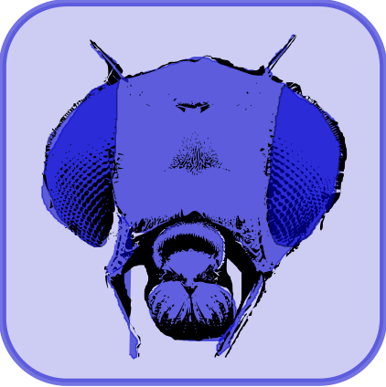

Capítulo 14 Endocría, exocría, consanguinidad y depresión endogámica
Hasta el momento, cuando nos manejamos a nivel de población generalmente supusimos y hemos aceptado como natural que la población se encontraba en equilibrio de Hardy-Weinberg, ignorando los efectos de un apartamiento sistemático de este equilibrio. Sin embargo, en poblaciones de tamaños reducidos, la probabilidad de apareamiento entre parientes se incrementa y por lo tanto aumenta la probabilidad de que dos alelos en un locus sean idénticos por ascendencia (IPA). Este fenómeno está directamente ligado a la disminución relativa de heterocigotos y el aumento de los homocigotos, lo que veremos más adelante se encuentra asociado al fenómeno de la depresión endogámica.
Más aún, el fenómeno puede verse en el sentido opuesto, es decir cuando combinamos dos poblaciones que son diferentes y por lo tanto, como demostraremos en este capítulo, se produce un incremento de los heterocigotos y bajo las misma condiciones de la arquitectura genética de la característica en las que se desarrolla la depresión endogámica, ocurrirá el fenómeno de la heterosis. Se trata de un fenómeno que el hombre ha observado por siglos y que se conoce vulgarmente como vigor híbrido, es decir, el incremento en una característica de interés al combinar dos poblaciones o razas que han divergido en el tiempo.
“The observations as I received them are shown in columns II. and III., where they certainly have no primâ facie appearance of regularity. But as soon as we arrange them the in order of their magnitudes, as in columns IV. and V., the case is materially altered. We now see, with few exceptions, that the largest plant on the crossed side in each pot exceeds the largest plant on the self-fertilised side, that the second exceeds the second, the third the third, and so on. Out of the fifteen cases in the table, there are only two exceptions to this rule. We may therefore confidently affirm that a crossed series will always be found to exceed a self-fertilised series, within the range of the conditions under which the present experiment has been made.”
Sir Francis Galton a Charles Darwin, en referencia a un ensayo con una población de plantas de maíz, entre otras varias especies ensayadas (citado en Darwin (1876))
En el presente capítulo, por lo tanto, vamos a trabajar con los fenómenos que ocurren en poblaciones de tamaño finito y cómo eso afecta las características fenotípicas de interés. En el comienzo estableceremos la relación que existe entre el tamaño poblacional y el incremento en la consanguinidad esperada, algo que ya vimos en el capítulo Apareamientos no-aleatorios, pero que veremos desde otra óptica, relacionaremos con otros parámetros de interés, como el número de machos y hembras en la población, o como el intervalo generacional. A continuación definiremos el concepto de depresión endogámica, veremos sus causas desde el punto de vista de los mecanismos genéticos que la producen y llegaremos a un modelo matemático muy sencillo para modelarla.
En la segunda parte del capítulo veremos el fenómeno recíproco de la heterosis y su relación con la exocría, el apareamiento de individuos no emparentados (o al menos con menor parentesco que el promedio de la población total). Veremos cómo se conecta todo con la endocría, ya que las fuerzas que juegan son nuevamente la dominancia y abundancia relativa de los heterocigotos. Trabajaremos con un modelo gráfico que nos simplificará la comprensión de las bases genéticas de diferentes cruzamientos y finalmente desarrollaremos un modelo genético formal de cruzamientos, que nos permitirá describir cada tipo de cruzamiento y estimar los parámetros de relevancia.
OBJETIVOS DEL CAPÍTULO
\(\square\) Presentar el concepto de consanguinidad y explorar su relación con el tamaño poblacional.
\(\square\) Estudiar el concepto de depresión endogámica, planteando un modelo matemático sencillo para su estudio.
\(\square\) Investigar el fenómeno de la heterosis y su relación con la exocría.
\(\square\) Estudiar la redistribución en la varianza genética producto de la depresión endogámica.
\(\square\) Analizar la importancia de mantener una proporción adecuada de machos y hembras en la población para preservar un tamaño efectivo poblacional óptimo, minimizando los efectos de la consanguinidad.
14.1 El aumento de la consanguinidad a partir del número de individuos
En una población algo idealizada en la que los reproductores colocan sus gametos en un “pool”, resulta evidente que a medida que el número de reproductores disminuye, la probabilidad de que sus hijos sean parientes se incrementa, lo que en la siguiente generación llevará ineluctablemente a la aparición de consanguinidad. La pregunta, por lo tanto, es cómo será la relación entre el incremento de la consanguinidad entre generaciones, a partir del número de individuos reproductores. Para eso, supondremos una población algo idealizada (Figura 14.1), donde las generaciones son no-solapantes y a partir de la misma vamos a calcular el incremento en la consanguinidad (\(\Delta F\)) en una generación, que corresponde al número de reproductores usados, pero asumiendo que el apareamiento es al azar. A efecto de realizar los cálculos, vamos a suponer una generación de base (F I), en la que tenemos M machos y H hembras, que suponemos no emparentados y analizaremos lo que ocurre a partir de la primera generación en la que se presenta consanguinidad. El enfoque se basa en la esperanza de consanguinidad en un individuo diploide, formado de la unión al azar de los gametos dentro del “pool” de sus progenitores.
Figura 14.1: Esquema para inferir \(\Delta F\) en una población a partir del número total de machos y hembras. Para que exista consanguinidad en los individuos de la tercera generación (C), sus padres (A y B) deben ser parientes y eso solo puede ocurrir si alguno de los abuelos (W e Y) o abuelas (X y Z) de C son el mismo individuo.
De acuerdo a la Figura 14.1, para que C tenga consanguinidad, sus padres A y B deben de ser parientes, por lo que, si no conocemos más información que la de los padres de estos últimos (\(W_{macho},X_{hembra},Y_{macho},Z_{hembra}\)), las dos únicas posibilidades son de que o los abuelos de C son el mismo individuo (W=Y) o las abuelas son el mismo individuo (X=Z). De hecho, pueden ocurrir la dos cosas al mismo tiempo, aunque esta probabilidad es muy pequeña. En cualquiera de los dos casos en que el abuelo es el mismo o la abuela es la misma (\(W=Y | X=Z\)), el parentesco entre A y B es de medios hermanos, por lo que el parentesco aditivo es de 1/4. Por lo tanto, la consanguinidad en C, \(F_C=\frac{1}{2} \cdot \frac{1}{4} = \frac{1}{8}\). En el caso en que ocurran los dos eventos al mismo tiempo (\(W=Y\ \& \ X=Z\)), ahora A y B serán hermanos enteros, por lo que el parentesco aditivo entre ellos será de 1/2 y la consanguinidad en C, \(F_C=\frac{1}{2} \cdot \frac{1}{2} = \frac{1}{4}\).
Pero, ¿cuál es la probabilidad de cada uno de estos eventos? Supongamos que existen M machos distintos y H hembras distintas en la generación de los abuelos. La probabilidad de que por azar, dentro del pool de gametos producidos por los machos, dos tomados al azar provengan del mismo macho es \(\frac{1}{M}\) y por lo tanto la probabilidad de que no provengan del mismo es \(\left(1 - \frac{1}{M} \right)\). Idéntico razonamiento se aplica a las hembras, pero ahora con H en lugar de M. Por lo tanto, la probabilidad de que los padres (machos) de A y B sean el mismo, pero no las madres, es \(\frac{1}{M} \left(1 - \frac{1}{H} \right)\). Del mismo modo, la probabilidad de que las madres de A y B, pero no los padres, sean las mismas es \(\frac{1}{H} \left(1 - \frac{1}{M} \right)\). Finalmente, la probabilidad de que el padre de A y B sea el mismo macho y al mismo tiempo la madre sea la misma hembra es \(\frac{1}{M} \frac{1}{H}\). Poniendo todo junto,
\[ \begin{split} \Delta F_G = \frac{1}{8} \left( \frac{1}{M} \cdot (1-\frac{1}{H})+ \frac{1}{H} \cdot (1-\frac{1}{M}) \right) + \frac{1}{4} \left( \frac{1}{M} \frac{1}{H} \right)=\\ \frac{1}{8} \left( \frac{1}{M} \cdot (1-\frac{1}{H})+ \frac{1}{H} \cdot (1-\frac{1}{M}) + 2 \frac{1}{M} \frac{1}{H} \right) =\\ \frac{1}{8} \left( \frac{1}{M} - \frac{1}{MH} + \frac{1}{H} - \frac{1}{MH} + \frac{2}{MH} \right) = \frac{1}{8} \left( \frac{1}{M} + \frac{1}{H} \right) \end{split} \]
Es decir, de acuerdo a este modelo algo idealizado, donde las generaciones no se solapan, con M machos y H hembras en total,
\[ \begin{split} \Delta F_G = \frac{1}{8} \left( \frac{1}{M} + \frac{1}{H} \right) = \frac{1}{8} \left( \frac{M+H}{MH} \right) \end{split} \]
Más aún, en el caso de una población ideal, podemos asumir que el número de machos es igual al número de hembras, o sea \(N/2\), con \(N\) igual al número de individuos reproductivos totales. Por lo tanto,
\[ \begin{split} \Delta F_G = \frac{1}{8} \left( \frac{2}{N} + \frac{2}{N} \right) = \frac{1}{8} \left( \frac{4}{N} \right) = \frac{1}{2N} \end{split} \]
Sin embargo, en la mayor parte de las poblaciones de interés productivo, el número de machos es claramente diferente al número de hembras, usualmente mucho menor ya que un macho es capaz de aparearse con varias hembras por estación reproductiva. La pregunta entonces que nos podemos formular es, dada una combinación con distinto número de machos que de hembras, a qué tamaño de población ideal le correspondería el mismo incremento en la consanguinidad. Para eso, igualando el \(\Delta F_G\), pero ahora con \(N_e\) en lugar de \(N\), obtenemos
\[ \begin{split} \Delta F_G = \frac{1}{8} \left( \frac{M+H}{MH} \right) = \frac{1}{2N_e} \\ \therefore N_e = \frac{4MH}{M+H} \end{split} \tag{14.1} \]
Más allá de la utilidad innegable de conocer el aumento en la consanguidad esperable en una generación, desde el punto de vista práctico (al menos en la producción animal) resulta mucho más importante conocer la tasa anual de incremento. La transformación de una en otra resulta elemental, nuevamente dividiendo entre el intervalo generacional de la población,
\[ \begin{split} \Delta F_a = \frac{ \Delta F_G}{IG} = \frac{\frac{1}{2N_e}}{IG} = \frac{M+H}{8\ M\ H\ IG} \end{split} \tag{14.2} \]
Pero nuestros desarrollos basados en \(M\) y \(H\) contados como el número total de machos y hembras funcionan cuando las generaciones son no-solapantes, es decir cuando la generación de los padres deja de reproducirse cuando los hijos entran al “pool reproductivo”. La formulación alternativa de \(M\) y \(H\) para la situación en que las generaciones se superponen es \(M=m \cdot IG\) y \(H=h \cdot IG\), con \(m\) y \(h\) el número de machos y hembras que entran por año, y con \(IG\) el intervalo generacional de la población.
Sustituyendo en la ecuación anterior las nuevas definiciones de \(M\) y \(H\), tenemos
\[ \begin{split} \Delta F_a = \frac{M+H}{8\ M\ H\ IG} = \frac{m\ IG+h\ IG}{8\ (m\ IG)\ (h\ IG)\ IG} = \frac{(m+h)\ IG}{8\ m\ h\ IG^3} = \frac{m+h}{8\ m\ h\ IG^2} \end{split} \]
En contextos como el de la mayoría de las producciones animales, el número de machos suele ser al menos de un orden menor que el de hembras por lo que \(\frac{m+h}{h}=\frac{m}{h}+\frac{h}{h} \approx 0+1=1\) y una buena aproximación que simplifica las estimaciones de la tasa de incremento anual de la consanguinidad puede obtenerse a partir de
\[ \begin{split} \Delta F_a = \frac{m+h}{8\ m\ h\ IG^2} = \frac{1}{8\ m\ IG^2} \left(\frac{m+h}{h}\right) \approx \frac{1}{8\ m\ IG^2} \end{split} \tag{14.3} \]
Pero veamos qué significan estas ecuaciones en términos prácticos. En la Figura 14.2 (a) se aprecian las curvas de nivel correspondientes a un mismo tamaño efectivo poblacional (\(N_e\)), dependiendo del número de machos y hembras utilizados. Obviamente, el gráfico es simétrico respecto a la diagonal 1-1, pese a que en la mayor parte de las situaciones reales nos encontraremos situados en la triangular superior izquierda de este gráfico (más hembras que machos). Tal vez el resultado más impactante visualmente es la casi verticalidad de las primeras curvas de nivel, aquellas que corresponden a tamaños efectivos poblacionales de 10, 50 y 100 individuos; una línea vertical como la azul, en 100 machos, por ejemplo, cuantas más curvas de nivel corte al subir, más crecerá el tamaño poblacional al subir el número de hembras. Sin embargo, lo que se aprecia en la región de pocos machos es que una línea vertical apenas cambiará el tamaño efectivo pese a aumetar enormemente el número de hembras. En el ejemplo de esta figura, la línea azul correspondiente a 100 machos, corta la curva correspondiente a 300 individuos cuando las hembras son 300 (el total de animales es de 400), pero nunca corta la curva de 400 individuos (dentro del gráfico, al menos), pese a que en la parte superior se usan 1000 hembras. De hecho, si re-arreglamos la ecuación (14.1) de forma de obtener el número de hembras necesarias para llegar a un determinado \(N_e\) dado un número de machos, tenemos
\[ \begin{split} N_e = \frac{4MH}{M+H} \therefore H = \frac{N_e\ M}{4M-N_e} \\ \lim_{N_e \to 4M} \frac{N_e\ M}{4M-N_e} = \infty \end{split} \tag{14.4} \]
O sea,
cuando el tamaño efectivo de la población se acerque a 4 veces el número
de machos, el número de hembras tenderá a infinito, o dicho de otra
forma, aún con un número infinito de hembras, el tamaño efectivo
poblacional nunca llegará a 4 veces el número de machos ¡algo
verdaderamente impactante!
Otro resultado interesante consiste en conocer cuál es el número de
individuos de un sexo dado que el tamaño efectivo poblacional es igual
al número de individuos del otro sexo. Pongamos por caso que queremos
conocer el número de machos tal que el tamaño efectivo poblacional es
igual al número de hembras. Para eso, igualamos \(N_e\) a \(H\) y obtenemos,
\[ \begin{split} M = \frac{N_e\ H}{4H-N_e} \\ N_e = H \therefore M = \frac{H^2}{4H-H} = \frac{H}{3} \end{split} \tag{14.4} \]
Es decir, cuando el número de machos es un tercio del número de hembras, el tamaño efectivo poblacional es igual al número de hembras directamente. Este resultado se puede además verificar visualmente en la figura 7.2(a), trazando una línea horizontal desde el número de hembras deseado (idealmente igual a algunas de las curvas de \(N_e\)), hasta que corte el correspondiente valor de \(N_e\) y ahí bajando verticalmente hasta encontrar el número de machos.
Figura 14.2: (a) Tamaño efectivo de la población de acuerdo al número de machos y hembras de la misma (\(M=m * IG,H=h * IG\)). (b) Curvas de isoconsanguinidad de acuerdo a la aproximación basada en número de machos por año; pasar de un IG=3 a IG=5 permite reducir el número mínimo de machos por año de 138 a 50 para mantener \(\Delta F_a \le 1\)x\(10^{-04}\).
Ejemplo 14.1
El desequilibrio en el número de machos y hembras que entran cada año a la población es una causa importante de la reducción en el tamaño efectivo de la misma, en particular en poblciones de animales domésticos. Para visualizar, de alguna manera, lo que esto significa en términos de rodeos/majadas típicas de nuestro país, en la siguiente tabla se presentan diferentes situaciones de número de machos y hembras que ingresan por año a la población, y su consecuente tamaño efectivo. En todos los casos se considera un intervalo generacional promedio de la población de \(3\) años:
Para calcular el valor de la última columna utilizamos la ecuación \(N_e=\frac{4MH}{M+H}\), con \(M=m\ \bar{IG}\) (es decir el número de machos que entran por año multiplicado por el intervalo generacional promedio de la población) y \(H=h\ \bar{IG}\). El tamaño “real” de la población es igual a \(M+H=m\ \bar{IG}+h\ \bar{IG}=(m+h)\ \bar{IG}\).
PARA RECORDAR
Si imaginamos que los reproductores colocan sus gametos en un “pool”, a medida que el número de reproductores disminuye, la probabilidad de que sus hijos sean parientes se incrementa, lo que en la siguiente generación llevará inevitablemente a la aparición de consanguinidad.
Si imaginamos una población con generaciones no solapantes y dónde los apareamientos se realizan al azar, con M machos y H hembras no emparentados, la probabilidad de que por azar, dentro del pool de gametos producidos por los machos, dos tomados al azar, provengan del mismo macho es \(\frac{1}{M}\) y por lo tanto la probabilidad de que no provengan del mismo es \(\left(1 - \frac{1}{M} \right)\). Idéntico razonamiento se aplica a las hembras, pero ahora con H en lugar de M. Por lo tanto, la probabilidad de que los padres (machos) de A y B sean el mismo, pero no las madres, es \(\frac{1}{M} \left(1 - \frac{1}{H} \right)\). Del mismo modo, la probabilidad de que las madres de A y B, pero no los padres, sean las mismas es \(\frac{1}{H} \left(1 - \frac{1}{M} \right)\). Finalmente, la probabilidad de que el padre de A y B sea el mismo macho y al mismo tiempo la madre sea la misma hembra es \(\frac{1}{M} \frac{1}{H}\). Entonces: \(\Delta F_G = \frac{1}{8} \left( \frac{1}{M} + \frac{1}{H} \right) = \frac{1}{8} \left( \frac{M+H}{MH} \right)\)
Si a su vez asumimos que esta población ideal posee el mismo número de machos que de hembras, o sea \(N/2\), con \(N\) igual al número de individuos reproductivos totales: \(\Delta F_G = = \frac{1}{2N}\)
Si salimos de condiciones ideales y asumimos un menor número de machos que de hembras, el tamaño de población ideal que se correspondería el mismo incremento en la consanguinidad será: \(N_e = \frac{4MH}{M+H}\). Si además queremos calcular la tasa anual de incremento podemos: \(\Delta F_a = \frac{ \Delta F_G}{IG} = \frac{M+H}{8\ M\ H\ IG}\)
Si ahora además suponemos generaciones solapantes donde \(M=m \cdot IG\) y \(H=h \cdot IG\), siendo \(m\) y\(h\) el número de machos y hembras que entran por año: \(\Delta F_a =\frac{m+h}{8\ m\ h\ IG^2}\). Si a su vez reconocemos que el número de machos tiende a ser mucho menor que el de las hembras con \((m+h)/h \approx 1\) entonces \(\Delta F_a \approx \frac{1}{8\ m\ IG^2}\)
¿Qué proporción de machos es necesaria para mantener un tamaño efectivo poblacional mínimo?
Supongamos ahora que con un número determinado de hembras queremos saber el número mínimo de machos para mantener \(N_e\) por encima de un valor. Podemos asumir sin pérdida de generalidad que el número de machos debe ser menor o igual al de hembras. Entonces,
\[ \begin{split} N_e \geq \frac{4MH} {M+H} \\ \text{Si}\ 0 \leq a \leq 1\ \text{y}\ M=a\ H\\ N_e \geq \frac{4aH^2} {H(a+1)} = \frac{4aH} {(a+1)} \therefore \\ N_e (a+1) \geq 4aH \iff 0 \leq \frac{N_e}{4H-N_e} \leq a \leq 1, \text{ pero} \\ 4H \geq 2N_e \iff H \geq \frac{N_e}{2} \end{split} \tag{14.5} \]
Por ejemplo, si tenemos 300 hembras en el rodeo, pero no queremos que el tamaño efectivo del mismo sea menor a 325, basta con colocar esos números en la ecuación (14.5), para obtener \(a\) y luego el número de machos:
\[ \begin{split} a \geq \frac{N_e}{4H-N_e} = \frac{325}{4 \cdot 300 - 325} = 0,3714286 \therefore M = 0,3714286 \cdot 300 \approx 112 \end{split} \]
La alternativa gráfica, aproximada, se encuentra en la Figura 14.3.
Figura 14.3: Proporción mínima de machos (respecto al número de hembras) necesaria para mantener un tamaño efectivo poblacional mínimo. Dado un \(N_e\) y un número de hembras (línea vertical y horizontal, respectivamente), las proporciones permitidas son las curvas que quedan en el cuadrante inferior derecho.
Dado un \(N_e\) mínimo a mantener y un número de hembras, trazamos una línea vertical y otra horizontal en esos valores y los coeficientes permitidos son los que están en el cuadrante inferior derecho, o sea, los mayores o iguales a la primer línea (el menor \(a\) posible) que entra en este cuadrante.
En un plano diferente, pero relacionado, en la Figura 14.2 (b) podemos
apreciar algunas curvas de idéntica tasa de incremento anual de la
consanguinidad en función del número de machos que entran por año y del
intervalo generacional de la población, de acuerdo a la ecuación
(14.3). La primera observación es que para una
consanguinidad dada y valores de intervalo generacional relativamente
bajos (la parte derecha de las curvas) es relativamente fácil una
reducción importante en el número de machos a usar, a un costo
relativamente menor en el incremento del intervalo generacional. Sin
embargo, a medida que nos vamos hacia la izquierda por la curva, cada
vez se hace más importante el impacto en el intervalo generacional de
una reducción en el número de machos. Por ejemplo, es posible mantener
\(\Delta F_a = 1\)x\(10^{-4}\) usando solo 50 machos en lugar de
\(\approx 138\), pero al precio de incrementar el intervalo generacional
de 3 a 5 años. Una reducción equivalente de 226 a 138 machos, hubiera
costado solo 0.65 años de incremento en el \(IG\):
\[ \begin{split} IG_{226 Machos} = \sqrt{\frac{1}{8\ \Delta F_a\ m }} = \sqrt{\frac{1}{8\ 1\text{x}10{-4} 226 }} \approx 2,35\ \text{años}\\ IG_{138 Machos} = \sqrt{\frac{1}{8\ 1\text{x}10{-4}\ 138}} \approx 3\ \text{años}\\ IG_{138 Machos}-IG_{226 Machos} = 3-2,35 = 0,65\ \text{años} \end{split} \]
14.1.0.1 Ejemplo 14.2a
Como vimos, la consanguinidad es el resultado de la endocría: un animal es consanguíneo únicamente si sus padres son parientes. El grado de consanguinidad que tenga un animal, depende del nivel de parentesco que tengan sus padres:
\[ \begin{split} F_Z=\frac{1}{2}\times a_{X,Y} \end{split} \]
Donde: \(F_Z\): coeficiente de consanguinidad del individuo \(Z\); \(a_{X,Y}\): parentesco aditivo entre \(X\) e \(Y\), ambos padres de \(Z\).
En la siguiente tabla se presentan diferentes situaciones de parentesco entre los padres y su consecuente coeficiente de consanguinidad del individuo:
Sus valores se encuentran dentro del rango entre \(0\) (sus padres no están emparentados) y \(0,5\) (sus padres son gemelos idénticos o clones).
14.1.0.2 Ejemplo 14.2b
(Tasa de consanguinidad generacional)
En la siguiente tabla, a modo de ejemplo, se presentan diferentes situaciones de número de machos y hembras que ingresan por año a la población, y su consecuente tasa de consanguinidad generacional, manteniendo en todas las situaciones, un intervalo generacional promedio de la población de \(2\) años:
14.1.0.3 Ejemplo 14.2c
En la siguiente tabla, a modo de ejemplo, se presentan diferentes situaciones de número de machos y hembras que ingresan por año a la población, y su consecuente tasa de consanguinidad anual, manteniendo en todas las situaciones, un intervalo generacional promedio de la población de \(2\) años:
14.1.0.4 Ejemplo 14.2d
En la siguiente tabla se presentan diferentes situaciones de tasa de incremento en la consanguinidad anual, y su consecuente número de machos necesarios que ingresen por año a la población, manteniendo en todas las situaciones, un intervalo generacional promedio de la población de \(4,5\) años:
PARA RECORDAR
Si quisiéramos determinar, dado un cierto número de hembras, cuál sería el número mínimo de machos necesarios para mantener \(N_e\) por encima de un valor podemos: \(H \geq \frac{N_e}{2}\)
Para una consanguinidad dada y valores de intervalo generacional relativamente bajos es relativamente fácil una reducción importante en el número de machos a usar, a un costo relativamente menor en el incremento del intervalo generacional.
14.2 El coeficiente de consanguinidad en razas lecheras
Claramente, como vimos más arriba la relación entre la tasa de incremento de la consanguinidad y el tamaño efectivo de una población nos permite reflexionar sobre la estructura de diferentes poblaciones de animales domésticos y sus implicancias para el mejoramiento o aún la subsistencia a largo plazo de razas y especies. La producción lechera es un excelente caso de estudio ya que existen diferentes razas que han seguido trayectorias diferentes durante el siglo XX y que en algunos casos han soportado presiones de selección extremadamente elevadas. La búsqueda de los animales más productivos puede ser un excelente objetivo a corto plazo o aún a largo plazo para un establecimiento, pero sin duda es una estrategia pelogrosa para el largo plazo en toda una raza o aún en una especie.
El problema es muy claro y lo podemos representar con una situación absurda por lo extrema: si elegimos al mejor toro como padre de toda la siguiente generación (cosa posible y que acontece), todos los individuos de la siguiente generación serán medios hermanos entre sí. Más aún, los cromosomas Y de los terneros machos serán todos iguales, desapareciendo toda la diversidad en ese cromosoma dentro de nuestro establecimiento. Pero peor aún es si todos los establecimientos del país utilizan el semen del mismo toro que elegimos nosotros, ya que claramente la situación se extenderá a toda la población nacional. Como toda la generación es hija del mismo toro, tenemos tres opciones: a) que los toros elegidos ahora sean de los que no consideramos óptimos en la generación anterior, b) utilizar el mismo semen, pero ahora con sus hijas y c) elegir toritos entre los medios hermanos de las vaquillonas. Claramente, ninguna de las opciones nos parece buena y esto viene de que el esquema que propusimos para representar el problema es absurdo. Sin embargo, a pesar de lo absurdo, la realidad en muchas razas no dista mucho de esto.
En algunas razas, la introducción de la tecnología de inseminación artificial (IA) en la década de 1960, en los países con las mayores poblaciones de la raza, implicó un profundo impacto en la estructura del rodeo nacional y aún mundial. Un ejemplo extremo de esto es la raza Holstein (conocida como Holando en nuestro país), que vivió a nivel mundial una expansión gigantesca durante el siglo XX. De acuerdo a un estudio realizado por Yue, Dechow, and Liu (2015), de los \(1.821\) toros presentes en la década de 1960, que llamaron IA-fundadores, solamente 3 de ellos, HOUSA1427381 (Pawnee Farm Arlinda Chief, 5/9/1962), HOUSA1441440 (Penstate Ivanhoe Star, 20/01/1963) y HOUSA1491007 (Round Oak Rag Apple Elevation, 30/08/1965), estaban presentes con descendientes vivos en la década de 2010. Es decir, más allá de la posible importación de material de otros orígenes (lo autores observan lo mismo para los datos de INTERBULL, un consorcio internacional, en la evaluación MACE), casi todo el material genético específico de machos (cromosoma Y, donde se encuentran genes de fertilidad en machos) pertenece a estos fundadores. Más aún, dos de estos 3 fundadores se convirtieron en dominantes en la década de 2010, con el \(48,78\%\) de todos los toros en el pedigrí de Pawnee Farm Arlinda Chief, y el \(51,06\%\) en el pedigrí de Round Oak Rag Apple Elevation. A causa de que se trataba de un toro portador de dos enfermedades autosomales recesivas (CVM y BLAD), la contribución del tercer fundador (Penstate Ivanhoe Star) disminuyó gradualmente, pasando del \(10\%\) en los años 90 a sólo un \(0,16\%\) en la década de 2010, no sin antes haber provocado un importante daño, como veremos en la sección Los riesgos del uso masivo de reproductores y la endogamia elevada.
Por otra parte, de acuerdo a los mismos autores, la tasa de crecimiento de la consanguinidad entre los años 2010 y 2014 fue de \(0,57\%\) (determinado a partir de datos en (2021)). Asumiendo un intervalo generacional de 4 años para Holsteins de América del Norte, como \(\Delta F=\frac{1}{2N_e} \therefore N_e=\frac{1}{2 \Delta F}\) y con esa tasa de incremento generacional el tamaño efectivo poblacional será igual a \(N_e=\frac{1}{2 \times 0,0057} \approx 88\) individuos. En otras palabras, toda la población Holstein de América del Norte, que es de más de \(9\) millones de individuos, sería equivalente a menos de 100 individuos reproduciéndose en condiciones ideales.
La evolución de la consanguinidad en las poblaciones de las razas Holstein/Roja y Blanca* y Milking Shorthorn de América del Norte pueden observarse en la Figura 14.4 a partir de datos obtenidos de la base del “Council on Dairy Cattle Breeding” (CDCB).
Figura 14.4: Evolución de la consanguinidad promedio en vacas de acuerdo al año de nacimiento, para la población de las razas Holstein/Roja y Blanca (rojo) y Milking Shorthorn (azul) con registros en la base de datos del “Council on Dairy Cattle Breeding”. Las línea a trazos marcan laa tendencias lineales asumiendo que el valor de \(F=0\) en 1960 es un punto fijo. Realización propia sobre datos en https://queries.uscdcb.com/eval/summary/inbrd.cfm
Claramente, en Holstein se observa una fuerte tendencia al crecimiento de la consanguinidad en el rodeo, tendencia que se ha visto acelerada en los últimos años, en particular desde el año 2014. Esto podría estar, al menos parcialmente, relacionado con el uso de información gemómica en las evaluaciones genéticas. De hecho, en toros jóvenes “genómicos”, el coeficiente de consanguinidad a partir del pedigree es superior al \(12\%\) y superior al \(14\%\) en el caso del coeficiente genómico. Dicho sea de paso, las correlaciones entre los coeficientes de consanguinidad obtenidos a partir del pedigree y los obtenidos a partir de datos genómicos no necesariamente tienen una alta correlación (Cortes-Hernández et al. (2021)), aunque sí la tienen entre las distintas forma de calcularlo a partir de datos genómicos (la matriz de parentesco, las corridas de homocigosidad ROH, etc.).
Por otra parte, en el caso de la raza Milking Shorthorn la tendencia creciente que se observaba después de los años 60’s mostró una reducción importante y en la actualidad se encuentra bastante “estancada” (lo que sería muy deseable). En otras razas lecheras (Ayrshire, Brown Swiss, Guernsey y Jersey) de la misma base de datos las tendencias han sido bastante similares a la de Holstein, por lo que la raza Milking Shorthorn parece ser más la excepción que la regla. Mientras que se trata de una raza plenamente productiva y que no se encuentra en peligro a nivel mundial, la población de la raza original (Dairy Shorthorn), en el noreste de Inglaterra y que no ha sufrido del cruzamiento indiscriminado en el siglo XX sí se encuentra en el nivel máximo de riesgo de desaparecer.
Ejemplo 14.3
De acuerdo a los datos del CDCB, la consanguinidad del rodeo Holstein/Red & White de América del Norte pasó de \(F=7,72\%\) a \(F=9,09\%\) en los últimos 4 años (2018-2021), mientras que entre 1960 y 1963 pasó de \(F=0\%\) a \(F=0,13\%\). Considerando que 4 años es el intervalo generacional de la raza, calcular el tamaño efectivo poblacional que se corresponde a cada uno de estos períodos. Asumiendo que el número de hembras es muchísimo mayor que el de machos, cosa que es cierta en este caso (más de 9 millones de vacas en el rodeo de América del Norte) ¿Cuántos machos estarían usando actualmente y cuántos se deberían usar para que la consanguinidad anual no aumente más de \(0,1\%\)?
Utilizando la ecuación que nos relaciona el incremento en la consanguinidad de una generación con el tamaño efectivo poblacional, tenemos que
\[ \begin{split} \Delta F=\frac{1}{2N_e}\ \therefore\ N_e=\frac{1}{2 \Delta F} \end{split} \]
En el período 2018-2021 \(\Delta F=9,09\%-7,72\%=1,37\%\), mientras que en el período 1960-1963 tenemos \(\Delta F=0,13\%-0,00\%=0,13\%\). Por lo tanto, sustituyendo esos valores en la ecuación de arriba, los correspondientes tamaños efectivos poblacionales son de \(N_e=\frac{1}{2 \times 0,0137}=36,5\) y \(N_e=\frac{1}{2 \times 0,0013}=384,6\) individuos.
Si el número de hembras es muchísimo mayor que el de machos, entonces
\[ \begin{split} \Delta F_a \approx \frac{1}{8\ m\ IG^2} \therefore m \approx \frac{1}{8\ \Delta F_a\ IG^2} \end{split} \]
Sustituyendo por los valores, tenemos que actualmente, con una tasa de consanguinidad anual de \(\Delta F_a=\frac{1,37\%}{4}=0,343\%\), se están usando un equivalente a
\[ \begin{split} m \approx \frac{1}{8\ \Delta F_a\ IG^2}=\frac{1}{8 \times \frac{0,0137}{4} \times 4^2}=\\ =\frac{1}{8\ \Delta F_a\ IG^2}=\frac{1}{8 \times 0,0137 \times 4}=2,28 \text{ machos} \end{split} \]
mientras que para mantener un incremento anual de la consanguinidad de \(0,1\%\) se debería usar al menos
\[ \begin{split} m \approx \frac{1}{8 \times 0,001 \times 4^2}=7,81 \text{ machos} \end{split} \]
PARA RECORDAR
Para la población de vacas Holstein Norteamericana, fue determinado que entre los años 2010 y 2014 la tasa de crecimiento de la consanguinidad fue de \(0,57%\).
A su vez, se ha determinado que toda la población Holstein de América del Norte (más de 9 millones de individuos) sería equivalente a aporoximadamente 88 individuos reproduciéndose en condiciones ideales.
14.3 Depresión endogámica
Una de las consecuencias que ya discutimos del incremento en la consanguinidad es el consiguiente aumento en la proporción de individuos homocigotos, a costa obviamente de la proporción de heterocigotos. Por otra parte, esto lleva a que algunas características donde la dominancia juega un papel relativamente importante se vean afectadas en su expresión, disminuyendo en general. En particular, dentro de este grupo de características parecen estar las que tienen directa incidencia en el fitness de los individuos (las reproductivas, por ejemplo) y las fisiológicas, que es la definición de Douglas S. Falconer (1983), por ejemplo, aunque se ha observado en otros tipos de características. Es importante mencionar que cuando hablamos de depresión endogámica, generalmente nos referimos a la disminución de una media poblacional y no al efecto de un individuo en particular.
Existen diferentes formas de estimar la depresión endogámica (Keller and Waller (2002)), dependiendo de la especie, los registros o recursos disponible. En algunos casos, alcanza con comparar una subpoblación creada con una determinada estructura de parentesco (un coeficiente de endocría particular) y comparar la media fenotípica a la de la población de referencia (que se asume con \(F=0\)). Por ejemplo, en las poblaciones de plantas autógamas, la depresión por endogamia puede calcularse comparando la aptitud de la progenie autofecundada y la cruzada. Si se utiliza un progenitor no consanguíneo (\(F=0\)), la progenie cruzada al azar también será no consanguínea (\(F=0\)), mientras que la progenie autofecundada tendrá un \(F=\frac{1}{2}\).
En otros casos, es posible explotar la información del pedigree de los individuos e incluir una covariable en el modelo que sea el coeficiente de consanguinidad del individuo (calculado a partir del pedigree como la mitad del parentesco entre sus progenitores). Por ejemplo, de acuerdo a Mc Parland et al. (2007), en Irlanda una vaca Holstein primípara, con una consanguinidad de \(\frac{1}{8}=12,5\%\) (es decir, tras el apareamiento de medios hermanos no consanguíneos), tuvo una disminución de \(-61,8\) kg de leche, \(-5,3\) kg de grasa y \(-1,2\) kg de proteína en la lactancia. Además, las concentraciones de grasa y proteína se redujeron en \(0,05\) y \(0,01\%\), respectivamente, mientras que el score de células somáticas (que se calcula como el logaritmo natural del recuento de células somáticas dividido por \(1.000\)) aumentó en \(0,03\). Por otra parte, de acuerdo a las frecuencias alélicas de la población irlandesa de Holstein, en animales con este nivel de consanguinidad se espera una incidencia de distocia un \(2\%\) mayor, un \(1\%\) más de incidencia de mortinatos, un \(0,7\%\) más de incidencia de terneros machos (es decir, una disminución en el número de reemplazos hembras, que son los importantes), un aumento del intervalo entre partos de \(8,8\) días, un aumento de la edad al primer parto de \(2,5\) días y una disminución del número de animales que llega a la segunda lactancia de \(-4\%\). Claramente, se trata de un nivel de consanguinidad muy importante y que debería resultar fácil de evitar, aún cuando la población de Holstein a nivel mundial muestra signos evidentes de consanguinidad elevada.
Sin embargo, mientras que Bezdı́ček, Šubrt, and Filipčı́k (2008) confirman los hallazgos de la depresión endogámica para producción de leche en la población de vacas Holstein de la República Checa, los resultados para la concentración de grasa y proteína van en sentido contrario a los de Mc Parland et al. (2007). Mientras que por cada incremento en la consanguinidad de \(F_x=1\%\) se espera una reducción en la producción de leche de \(-59,75\) kg, las concentraciones de grasa y proteína se incrementaron en \(+0,0112\%\) y \(+0,0030\%\) respectivamente. A primera vista parecería que los dos estudios difieren significativamente en las conclusiones alcanzadas respecto a grasa y proteína, mientras que coinciden para la producción lechera, pero si lo miramos con un poco más detenimiento las diferencias no vienen por ese lado. Una advertencia obvia es que se trata de dos estudios diferentes, en países completamente diferentes y con diferente tradición lechera y diferentes animales. Las diferencias en los estimados obtenidos para la depresión endogámica en producción lechera son enormes: asumiendo como cierta la linealidad de la depresión endogámica con el coeficiente de endocría (algo que veremos más adelante), si la reducción en leche es de \(-59,75\) kg para un coeficiente de endocría de \(F_x=1\%\), entonces aplicando regla de tres, la reducción será igual \(-746,9\) para un coeficiente de endocría de \(F_x=12,5\%\) (el que aparece en Mc Parland et al. (2007) para una reducción equivalente a \(-61,8\) kg). Claramente, la concentración de sólidos (grasa y proteína) es igual a la masa producida (en kg, por ejemplo) de dichos sólidos, dividida entre el volumen de leche. Como el mismo se redujo de una manera drástica, aunque la producción de sólidos también hubiese disminuido a causa de la depresión endogámica, si la proporción de reducción es menor que la observada para leche, entonces aumentará la concentración con la depresión endogámica, que es lo que se observa.
Otro punto relevante al extrapolar resultados es la posible no-linealidad de la depresión endogámica con el coeficiente de consanguinidad, como es de esperar si la causa de la misma es la interacción epistática entre los genes. Miglior, Szkotnicki, and Burnside (1992) analizaron los registros de leche, grasa y porcentaje de grasa de la primera lactación de \(53.592\) vacas Jersey. A partir de esos datos, los coeficientes de regresión de la leche, la grasa y el porcentaje de grasa en función de la consanguinidad fueron de \(-9,84\) kg, \(-0,55\) kg y \(-0,0011\%\) por cada \(1\%\) de aumento de la consanguinidad. Sin embargo, cuando el coeficiente de consanguinidad fue mayor a \(12,5\%\) la depresión endogámica fue mucho mayor a la esperada.
La depresión endogámica es un fenómeno que ha sido observado consistentemente, sin embargo, las causas biológicas del mismo aún no han sido totalmente clarificadas (D. Charlesworth and Willis (2009)). Esencialmente, para las características que tienen impacto directo en el fitness, tradicionalmente se han manejado tres hipótesis que podrían explicar la existencia del fenómeno: a) la hipótesis de la dominancia, b) la hipótesis de la sobredominancia y c) la hipótesis de la epistasis.
En la primer hipótesis, se trata de que en presencia de alelos recesivos mayormente deletéreos gobernando la característica, en baja frecuencia, el incremento de los homocigotas llevaría a una depresión en la característica ya que al tratarse de recesivos se expresarán fenotípicamente solo en homocigosis. Por otro lado, en la segunda hipótesis, si el mecanismo de los genes que gobiernan una característica es la sobredominancia, es decir, el mayor fitness de los heterocigotas respecto a los homocigotas, la reducción en el número de heterocigotas (que son lo que tienen el “mejor” fenotipo) tendrá un impacto directo en la característica. Sin embargo, D. Charlesworth and Willis (2009) sugieren que la presencia de mutaciones deletéreas en (por ejemplo) dos genes en fase de repulsión se manifieste como una ventaja de los heterocigotos respecto a los dos haplotipos homocigotos (uno sería homocigoto para un alelo recesivo deletéreo en un gen y el otro para el alelo del otro gen). En este caso, si bien es difícil de distinguir en la práctica de la sobredominancia, en realidad, desde el punto de vista teórico se trata de una pseudo-sobredominancia causada por el desequilibrio de ligamiento entre los genes. Por último, en la hipótesis de la epistasis, la idea es que los heterocigotos son más libres de encontrar combinaciones óptimas y a diferencia de las otras dos hipótesis esta plantea un comportamiento no-lineal respecto al coeficiente de consanguinidad.
En la sección Endocría y depresión endogámica del capítulo Apareamientos no-aleatorios ya hicimos una introducción al modelado de la depresión en función del coeficiente de endocría, las frecuencias génicas y el modo de acción génica. En esta sección vamos a ver el tema desde un punto de vista ligeramente diferente y que nos llevará naturalmente a generalizar las conclusiones a características gobernadas por unos pocos o por muchos loci, sin distinción. Para eso vamos a partir de los cambios en las frecuencias genotípicas que podemos esperar en presencia de endogamia, respecto a la ausencia de la misma, en ambos casos asumiendo Hardy-Weinberg, en el segundo caso la Generalización de Hardy-Weinberg para apareamientos no-aleatorios.
Supongamos primero que la característica está determinada por un solo locus con dos alelos, como ya vimos previamente. De acuerdo con lo esperado en presencia de endogamia, las frecuencias genotípicas serán \(\bar p^2+\bar{p}\bar{q}F\) para los \({A_1A_1}\), \(2\bar{p}\bar{q}-2\bar{p}\bar{q}F\) para los \({A_1A_2}\) y \(\bar q^2+\bar{p}\bar{q}F\) para \({A_2A_2}\). Como vimos en el capítulo El Modelo Genético Básico, los valores de estos genotipos serán \(+a\) para el \({A_1A_1}\), \(d\) para el \({A_1A_2}\) y \(-a\) para el \({A_2A_2}\), por lo que poniendo todo junto en una tabla tenemos:
Para calcular la media genotípica de la población en presencia de endogamia alcanza con sumar los genotipos ponderados por su frecuencia, como está en la última columna de la tabla. En particular, recordando que \((p^2-q^2)=(p+q)(p-q)=(p-q)\) ya que \(p+q=1\), entonces
\[M_F=[\bar p^2a+\bar{p}\bar{q}aF]+[2\bar{p}\bar{q}d-2\bar{p}\bar{q}dF]+[-\bar q^2a-\bar{p}\bar{q}aF]=\] \[a(\bar p^2-\bar q^2)+[\bar{p}\bar{q}aF-\bar{p}\bar{q}aF]+[2\bar{p}\bar{q}d-2\bar{p}\bar{q}dF]=\] \[a(\bar p^2-\bar q^2)+[2\bar{p}\bar{q}d-2\bar{p}\bar{q}dF]= a(\bar p^2-\bar q^2)+2\bar{p}\bar{q}d(1-F)\ \therefore \] \[ \begin{split} M_F=a(\bar p-\bar q)+2\bar{p}\bar{q}d(1-F) \end{split} \tag{14.6} \]
o, teniendo en cuenta que \(M_0=a(\bar{p}^2-\bar{q}^2)+2\bar{p}\bar{q}d\), entonces
\[ \begin{split} M_F=M_0-2d\bar{p}\bar{q}F \end{split} \tag{14.6} \]
El cambio resultante en la media debido a la endogamia es por lo tanto \(2d\bar{p}\bar{q}F\). Dicho de otra manera, la depresión causada por la endogamia (observar el signo negativo que antecede a \(2d\bar{p}\bar{q}F\)) es proporcional al coeficiente de endocría, a la dominancia y también proporcional al producto de las frecuencias alélicas medias. Cuando \(\bar p=\frac{1}{2}=\bar q\) la depresión será máxima, mientras que a valores de \(\bar p\) cercanos a uno o a cero la depresión será nula. Esto se explica muy simplemente de manera intuitiva, ya que como manejamos previamente la depresión endogámica es “producto” de la reducción en los heterocigotos (e incremento de los homocigotas), los que son una función directa de \(\bar p \bar q\). Además, tanto \(F\) como \(d\) afectan en forma directa a la depresión endogámica.
Como en el desarrollo anterior no hicimos ninguna alusión a un modo particular de acción alélica y solo apelamos a los valores genotípicos \(a\) y \(d\), en la medida de que la epistasis no sea un mecanismo relevante para la característica, alcanza con sumar el efecto de depresión a tavés de todos los loci que participan de la determinación genética de la característica. En cada uno de ellos la frecuencia de los alelos será diferente y por lo tanto deberemos expresarlas como \(p_i\) y \(q_i=1-p_i\). Además, en cada locus los valores genotípicos serán diferentes, por lo que también debemos expresarlos como \(a_i\) y \(d_i\). El coeficiente de endocría, sin embargo, será el mismo para todos los loci ya que se trata de una propiedad general de la población y que no varía entre loci.
De acuerdo a lo anterior, podemos escribir el efecto de todos los loci en la media de la característica bajo endogamia como
\[ \begin{split} M_F= \sum_i a_i(\bar p^2_i-\bar q^2_i)+2\sum_i \bar{p}_i\bar{q}_i d_i (1-F) \end{split} \tag{14.7} \]
y el consiguiente cambio en la media, respecto a la población sin endogamia como
\[ \begin{split} M_F=M_0-2\sum_i \bar{p}_i\bar{q}_i d_iF \end{split} \tag{14.8} \]
14.3.0.1 Ejemplo 14.4a
En la siguiente tabla se presentan diferentes situaciones de porcentaje de consanguinidad anual, y su consecuente tiempo en disminuir cierto peso al destete promedio, manteniendo en todas las situaciones, una depresión endogámica para peso al destete de \(3,4\) kg por cada \(1\%\) de consanguinidad:
14.3.0.2 Ejemplo 14.4b
En la siguiente tabla se presentan diferentes situaciones de porcentaje de consanguinidad generacional y su consecuente tiempo en disminuir cierto porcentaje de destete, manteniendo en todas las situaciones, una depresión endogámica para porcentaje de destete de \(1,5\%\) por cada \(1\%\) de consanguinidad:
PARA RECORDAR
El incremento en la consanguinidad, que implica un aumento en la porporción de homocigotos y esto lleva a que algunas características donde la dominancia juega un papel relativamente importante se vean afectadas en su expresión, disminuyendo en general. En particular, dentro de este grupo de características parecen estar las que tienen directa incidencia en el fitness de los individuos y las fisiológicas.
Es posible a través del pedigree de los individuos determinar el coeficiente de consanguinidad del individuo (calculado como la mitad del parentesco entre sus progenitores).
El cambio resultante en la media debido a la endogamia (\(M_F=M_0-2d\bar{p}\bar{q}F\)) es \(2d\bar{p}\bar{q}F\). Tal que, la depresión causada por la endogamia es proporcional al coeficiente de endocría, a la dominancia y también al producto de las frecuencias alélicas medias. Cuando \(\bar p=\frac{1}{2}=\bar q\) la depresión será máxima, mientras que a valores de \(\bar p\) cercanos a uno o a cero la depresión será nula.
Si consideramos más de un loci el consiguiente cambio en la media, respecto a la población sin endogamia será: \(M_F=M_0-2\sum_i \bar{p}_i\bar{q}_i d_iF\)
Los riesgos del uso masivo de reproductores y la endogamia elevada
La producción lechera es posiblemente el mejor ejemplo de un uso masivo y abusivo de un número pequeño de reproductores. Las claves de este uso indiscriminado de los mismos reproductores se encuentran en el deseo de maximizar las ganancias a corto plazo, considerando solamente aquellas características que rinden en lo inmediato y descuidando el incremento consiguiente de la consanguinidad, la reducción en la fertilidad, la reducción de la variabilidad genética y los riesgos de reproducir animales portadores de enfermedades de base recesiva. Claramente, pese a estas “motivaciones” importantes, al potencial desastre que enfrentamos solo fue posible arribar gracias a las tecnologías de reproducción masivas, en particular la producción de semen congelado y las técnicas de inseminación in vitro. Como ejemplo de esto mencionaremos solo algunas enfermedades de carácter autosomal recesivo y su impacto en la producción lechera.
Malformación Vertebral Compleja (CVM) Es una enfermedad responsable de terneros con malformaciones que abortan espontáneamente o mueren poco después de nacer. Está causada por una mutación de pérdida de sentido en el gen SLC35A3 (Thomsen et al. (2006)) y fue reportada por primera vez en el año 1999. De acuerdo al genotipado realizado, dicha mutación se extendió en forma significativa a partir del uso masivo del toro Carlin-M Ivanhoe Bell (apodado Bell), nacido en 1974 y usado durante las décadas de 1980 y 1990, un toro de gran valor por la gran producción lechera de sus hijas (dejando una progenie de más de 80.000 individuos). Curiosamente, este toro es portador (es decir, al tratarse de enfermedades autosomales recesivas los portadores solo tienen una copia de la mutación) de una mutación para otra enfermedad autosomal recesiva conocida como BLAD, cuyo gen se encuentra en otro cromosoma y que veremos luego. El padre de Carlin-M Ivanhoe Bell, el toro Penstate Ivanhoe Starissa ya contaba con las dos mutaciones, pero no así su abuelo Osborndale Ivanhoe que solo era portador para BLAD. La incidencia de esta mutación es muy alta, alcanzando un porcentaje de portadores mayor al \(30\%\) en rodeos de Dinamarca y Japón. Como solamente los homocigotos son afectados, pero en ese caso no hay descendencia (un \(88\%\) abortan antes del día 260 desde la concepción y los que nacen no son viables), suponiendo esta frecuencia en machos y hembras del rodeo, entonces \(q^2=0,30^2=0,09\), o una reducción en la fertilidad del rodeo de \(9\%\) (que puede ser aún mayor en presencia de endogamia).
Deficiencia de Adhesión Leucocitaria Bovina (BLAD) Es una enfermedad congénita autosómica recesiva de la raza Holstein, que se caracteriza por infecciones bacterianas recurrentes, retraso en la cicatrización de las heridas y retraso en el crecimiento, fiebre, úlceras graves, falta de apetito, neumonía crónica y diarrea y que también se asocia a una marcada neutrofilia persistente (Nagahata (2004)). Como vimos antes, su diseminación entre la población de ganado Holstein se puede remontar al toro Osborndale Ivanhoe, muy utilizado en las decadas de los 50’s y 60’s del siglo pasado. La base molecular de la enfermedad es una mutación puntual (de adenina a guanina) en la posición 383 del gen CD18, que provoca una sustitución de ácido aspártico por glicina en el aminoácido 128 (D128G) de la molécula de adhesión CD18. Como resultado de esto, los neutrófilos tienen una expresión alterada de la integrina beta2 (CD11a,b,c/CD18) de la molécula de adhesión leucocitaria. El ganado afectado muere a una edad temprana debido a las complicaciones infecciosas. Los programas de control de portadores que se han utilizado para la raza han sido relativamente exitosos para reducir la frecuencia de esta enfermedad.
Síndrome de Brachiespina Bovina Se trata de una enfermedad del ganado Holstein en la que el ternero nace muerto, con una drástica reducción del peso corporal, retraso en el crecimiento y acortamiento de la espina dorsal con malformaciones vertebrales asociados. Es causada por una deleción de 3,3 kb en el gen del grupo I de complementación de la anemia de Fanconi bovina (FANCI) en el cromosoma 21 (Fang et al. (2013)). Fue detectada en un principio en norteamérica y Dinamarca, luego en Asia y recientemente en nuestro país. En principio, su diseminación se puede trazar al uso del toro norteamericano Sweet Haven Tradition, usado a fines de los 70’s y durante los 80’s. Se estima que dentro de la raza Holstein de \(6\%\) a \(7\%\) son portadores.
Haplotipos de Fertilidad Se trata de regiones del genoma identificadas a partir de estudios genómicos (es decir, a partir de animales que poseen datos de genotipado masivo) y que implican una reducción en la fertilidad de los portadores de dichos haplotipos. Los conocidos son Holstein Haplotype 1-5 (HH1, HH2, HH3, HH4, HH5), Jersey Haplotype 1 (JH1), Brown Swiss Haplotype 1 y 2 (BH1 y BH2), y Ayrshire Haplotype 1 (AH1). Por lo general producen abortos a diferentes edades del feto, siendo las más perjudiciales desde el punto de vista económico aquellas que producen abortos tardíos. Afortunadamente, como su identificación ha sido en base al genotipado, pese a la complejidad de sus mecanismos moleculares (que en la mayor parte no han sido dilucidados) son fáciles de identificar a partir del genotipado, algo que ya es rutina para los machos muy usados en ganado lechero. En los catálogos la forma usual de identificar a los portadores es a través de la letra C (“carrier”, portador) luego del correspondiente haplotipo, por ejemplo HH3C o por la letra F para los no-portadores, por ejemplo HH3F.
Sindactilia Es una enfermedad congénita de caracter autosomal recesivo, en principio causada por un solo gen. El resultado es la unión de las pezuñas en una sola. Se ha reportado en las razas Holstein, Aberdeen–Angus, Simmental, Brown Swiss, Chianina, Nativa Japonesa, Hariana, Sueca Roja y Blanca y Checa Negra y Blanca. En Holstein se puede trazar su aparición a un solo reproductor. Desde el punto de vista molecular la mayor parte de los casos en Holstein se deben a la sustitución de dos nucleótidos en el exón 33 del gen LRP4, aunque recientemente se revelaron nuevas mutaciones puntuales no-sinónimas de LRP4 que coexisten en familias Holstein, Simmental alemán y Simmental-Charolais (Drögemüller et al. (2007)).
Existen muchas otras enfermedades congénitas del ganado y en particular del ganado lechero, también autosomales recesivas, como la Mielopatía Degenerativa Progresiva Bovina conocida como Weaver por el andar errático de los animales, o la recientemente identificada como Haplotipo para la Deficiencia de Colesterol (HCD) que podría trazarse hacia el toro Maughlin Storm, un toro nacido en 1991 (Kipp et al. (2016)). El punto importante es que el uso masivo de toros portadores de enfermedades de caracter autosómico recesivo hace que sea difícil detectar el desastre que implica a mediano y largo plazo hasta que el mismo se encuentra en estado muy avanzado.
La endogamia elevada tiene otro efecto importante desde el punto de vista cuantitativo. Como vimos antes, bajo endogamia el coeficiente de endocría aumenta y esto lleva a un incremento en los homocigotos respecto a los heterocigotos. De hecho, como vimos en la sección Generalización de Hardy-Weinberg para apareamientos no-aleatorios, en el caso de dos alelos, las frecuencias de los homocigotos pasan a ser \(p^2+pqF\) y \(q^2+pqF\). Supongamos que, sin pérdida de generalidad, \(q\) representa la frecuencia del alelo recesivo. Por lo tanto, en ausencia de endogamia la frecuencia esperada de la enfermedad (autosomal recesiva) será igual a la frecuencia de homocigotos con ese alelo, que es \(q^2\). Sin embargo, en presencia de endogamia, con un coeficiente de endocría de \(F\) la frecuencia de homocigotos del alelo recesivo será \(q^2+pqF\), que será la frecuencia de afectados. Como \(pqF \geqslant 0\) y solo será \(0\) cuando \(F=0\) (ausencia de endogamia) o \(pq=0\), esto último implicando la fijación de uno de los dos alelos (en cuyo caso no hay más enfermedad, tanto por ausencia de afectados o porque desaparecerían los sanos), entonces \(pqF\) aumenta la frecuencia de afectados.
Una forma de ver la importancia relativa de las dos fuentes es estudiar su relación, es decir, la función \(f(q)=\frac{pqF}{q^2}=\frac{(1-q)F}{q}\). En la Figura 14.5 podemos observar el comportamiento de esta función para cuatro valores del coeficiente de endocría \(F\).
![Relación entre el aporte de homocigotos debido a la endogamia y el aporte esperado en ausencia de endogamia, es decir \(\frac{pqF}{q^2}\), en función de la frecuencia del alelo recesivo (\(q\)) para cuatro valores del coeficiente de endocría (\(F=0,01\) azul, \(F=0,05\) verde, \(F=0,10\) anaranjado y \(F=0,15\) rojo). Cuando la relación vale \(1\) (línea a trazos) ambos aportes son iguales, mientras que para valores mayores a \(1\) solo el aporte debido a la endogamia es mayor que lo esperado en ausencia de ella. Claramente, cuanto más baja es la frecuencia del alelo recesivo mayor importancia relativa adquiere el componente debido a la endogamia.](ApuntesGeneticaII_files/figure-html/relaendo-1.png)
Figura 14.5: Relación entre el aporte de homocigotos debido a la endogamia y el aporte esperado en ausencia de endogamia, es decir \(\frac{pqF}{q^2}\), en función de la frecuencia del alelo recesivo (\(q\)) para cuatro valores del coeficiente de endocría (\(F=0,01\) azul, \(F=0,05\) verde, \(F=0,10\) anaranjado y \(F=0,15\) rojo). Cuando la relación vale \(1\) (línea a trazos) ambos aportes son iguales, mientras que para valores mayores a \(1\) solo el aporte debido a la endogamia es mayor que lo esperado en ausencia de ella. Claramente, cuanto más baja es la frecuencia del alelo recesivo mayor importancia relativa adquiere el componente debido a la endogamia.
La línea a trazos en \(1\) representa el valor en que ambos componentes, numerador y denominador son iguales, o dicho de otra forma, los aportes debidos a la endogamia y los correspondientes a la ausencia de la misma son iguales. Claramente, a valores bajos de \(q\) (o sea, cuanto más raro es el alelo recesivo) más importante en términos relativos es el aporte debido a la endogamia y el comportamiento es no lineal, más importante cuanto más cerca estemos de \(q=0\). Por otra parte, para valores muy bajos del coeficiente de endocría, la importancia del componente debido a la endogamia solo empieza a notarse a frecuencias muy bajas del alelo recesivo, mientras que a valores un poco más altos de \(F\) las frecuencias de \(q\) a las que empieza a observarse el aporte importante de la endogamia son mucho más altas. La igualdad del aporte de los dos componentes se da cuando
\[ \begin{split} \frac{(1-q)F}{q}=1 \Leftrightarrow (1-q)F=q \Leftrightarrow F=q+Fq \Leftrightarrow F=q(1+F) \therefore \\ q=\frac{F}{1+F} \end{split} \]
Por ejemplo, para \(F=0,01\) la frecuencia a la ambos componentes aportan lo mismo (la línea a trazos) es \(q=\frac{F}{1+F}=\frac{0,01}{1+0,01}=0,0099\), mientras que para \(F=0,15\) esto se da en \(q=\frac{0,15}{1+0,15}=0,1304\). A partir de estos puntos, si disminuye más la frecuencia del alelo recesivo, mayor será el aporte relativo de los homocigotos debidos a la endogamia.
Ejemplo 14.5
Es conocido que la raza Holstein presenta un elevado nivel de consanguinidad tanto a nivel de la población mundial como en particular en determinadas poblaciones locales. Asumiendo que la frecuencia del alelo recesivo en el gen SLC35A3 que causa la Malformación Vertebral Compleja tiene una frecuencia de \(q=0,15\) en una población determinada, calcular la proporción de afectados cuando no existe consanguinidad (\(F=0\)) y cuando el coeficiente de endocría es igual a \(F=0,08\).
En el primer caso, la frecuencia esperada de homocigotos (afectados) es \(q^2=0,15^2=0,0225=2,225\%\). En el segundo caso, que parece describir mejor la situación en la raza Holstein, la frecuencia esperada de homocigotos será de \(q^2+pqF=q^2+(1-q)qF=0,15^2+0,85 \times 0,15 \times 0,08=0,0327=3,27\%\). Por lo tanto, \(\frac{3,27\%}{2,225\%}=1,453\), es decir que tendremos \(45,3\%\) más de terneros perdidos por la enfermedad a causa del incremento en la endogamia del rodeo.
PARA RECORDAR
La producción lechera es posiblemente el mejor ejemplo de un uso masivo y abusivo de un número pequeño de reproductores. Este uso masivo de toros que a su vez han sido portadores de enfermedades de caracter autosómico recesivo hace que sea difícil detectar el desastre que implica a mediano y largo plazo hasta que el mismo se encuentra en estado muy avanzado.
En presencia de endogamia, con un coeficiente de endocría de \(F\), la frecuencia de homocigotos del alelo recesivo será \(q^2 + pqF\), que será la frecuencia de afectados.
Redistribución en la varianza genética
La presencia de endogamia va a alterar la distribución de frecuencias alélicas entre un conjunto de poblaciones, respecto a esa evolución bajo un proceso de deriva en (sub)poblaciones de tamaño infinito. Mientras que el cálculo de cómo se distribuirá la varianza genética en presencia de endogamia entre línea y dentro de líneas es relativamente sencillo para genes completamente aditivos, el cálculo en presencia de dominancia es mucho más complejo y su resultados de escasa utilidad práctica. En el caso de los genes completamente aditivos, la partición de varianzas (como veremos) no depende de las frecuencias alélicas iniciales, mientras que en el caso de genes con dominancia esto no es así. Lo que sigue está basado en lo expuesto en Douglas S. Falconer (1983), que además da un tratamiento mucho más exhaustivo al tema de las diferentes fuentes de varianza y presenta numerosos ejemplos con datos reales.
Supongamos que tenemos la población total dividida en diferentes subpoblaciones de tamaño \(N\). Vamos primero a considerar el caso de un solo locus, con dos alelos, como de costumbre, aunque la generalización del resultado es inmediata. Supongamos que las frecuencias iniciales globales de los dos alelos son \(p_0\) y \(q_0\).
Recordando que la varianza aditiva era \(2pq\alpha^2\), con \(\alpha=a+d(q-p)\) y dado que \(d=0 \therefore 2pq\alpha^2=2pqa^2\), la varianza genética será entonces
\[ \begin{split} V_G=2p_0q_0\alpha^2=2p_0q_0[a+d(q-p)]^2=2p_0q_0 a^2 \end{split} \tag{14.9} \]
Por otra parte, la varianza genética dentro de cada una de las líneas (subpoblaciones) estará dada por
\[ \begin{split} V_{G_i}=2p_iq_i a^2 \end{split} \tag{14.10} \]
donde \(p_i\) y \(q_i\) son las frecuencias correspondientes a cada línea (el efecto \(a\) no depende de la línea y es, por lo tanto, igual para todas).
Si llamamos \(\overline{pq}\) a la media de los productos \(p_iq_i\), la varianza media dentro de las líneas es
\[ \begin{split} V_{G_w}=2(\overline{pq}) a^2 \end{split} \tag{14.11} \]
Por otra parte, \(2 \overline{pq}\) es la frecuencia de heterocigotas, que en función del proceso de endogamia es igual a \(2p_0q_0(1-F)\), por lo que sustituyendo en la ecuación (14.11), tenemos que
\[ \begin{split} V_{G_w}=2(\overline{pq}) a^2=2p_0q_0(1-F)a^2 \end{split} \tag{14.12} \]
y combinando esto con la ecuación (14.9), nos queda que la varianza genética dentro de líneas en función de la endogamia es igual a
\[ \begin{split} V_{G_w}=2p_0q_0(1-F)a^2=(1-F)\ V_G \end{split} \tag{14.12} \]
Tenemos que calcular ahora la varianza entre líneas. Como \(d=0\), la media de cada una de las líneas estará dada por
\[ \begin{split} M_i=a(p_i-q_i)+2p_iq_id=a(p_i-q_i) \end{split} \tag{14.13} \]
Utilizando el hecho de que \(p-q=(1-q)-q=1-2q\), entonces, la ecuación anterior la podemos escribir como \(M=a(p_i-q_i)=a(1-2q_i)=a-2aq_i\). Para calcular la varianza de una suma de variables aleatorias no correlacionadas, alcanza con recordar que es la suma de ambas varianzas, y en este caso \(a\) es una constante entre líneas, por lo que no va a covariar con \(2aq\). Por lo tanto, la varianza de de \(M\) será
\[ \begin{split} \sigma^2_M= {Var}(a)+ {Var}(2aq)=(2a)^2 \sigma^2_q \therefore \\ \sigma^2_M=4a^2 \sigma^2_q \end{split} \tag{14.13} \]
Ahora, como vimos en [El Coeficiente de endocría y estadísticos F], si re-arreglamos la ecuación (6.37), la varianza en frecuencias alélicas en presencia de endogamia (que es una función del tiempo) será
\[ \begin{split} \sigma^2_q=p_0q_0F=p_0q_0\left[\left(1-\frac{1}{2N}\right)^t\right] \end{split} \tag{14.14} \]
Es decir, la dispersión de frecuencias alélicas entre líneas será directamente proporcional al coeficiente de endocría y a las frecuencias iniciales de los alelos en el locus bajo consideración. Por lo tanto, como \(F\) es una función del tiempo, la dispersión irá cambiando. Al mismo tiempo, la tasa de incremento en la dispersión de las frecuencias alélicas debido al efecto de la deriva, es decir, en poblaciones de tamaño finito y por lo tanto en presencia de endogamia será igual a \(\Delta F\).
Sustituyendo en resultado de la ecuación (14.14) en la ecuación (14.13) tenemos
\[ \begin{split} \sigma^2_M=4a^2 \sigma^2_q =4 a^2 p_0q_0F \end{split} \tag{14.15} \]
Finalmente, si recordamos de la ecuación (14.9) que \(V_G=2p_0q_0 a^2\),entonces
\[ \begin{split} \sigma^2_M=4 a^2 p_0q_0F=2 [2p_0q_0 a^2] F \therefore \\ \sigma^2_M=2\ V_G\ F \end{split} \tag{14.16} \]
Como hemos trabajado solamente con un locus de efectos aditivos, el resultado se extiende a todos los loci con este tipo de acción y el resultado \(\sigma^2_M=2\ V_G\ F\) se mantendrá.
De acuerdo a esto, considerando solo el caso de características determinadas por genes de acción aditiva y en ausencia de epistasis, de acuerdo a las ecuaciones (14.16) y (14.12), la partición de la varianza genética estará dada por
Como lo muestra la última línea de la tabla, la varianza total estará dada por \(2\ F\ V_G+(1-F) V_G=V_G[2F+1-F]=(1+F)\ V_G\). Como el coeficiente de endocría tenderá a crecer con el paso del tiempo y eventualmente alcanzará el valor de \(F \approx 1\), en ese caso la varianza total será
\[ \begin{split} V_{G_F}=(1+F)\ V_G \approx (1+1)\ V_G=2\ V_G \end{split} \tag{14.17} \]
Dicho de otra forma, con endogamia completa, la varianza genética de la población será el doble que en la población de base. Además, como la varianza dentro de líneas es igual a \((1-F)\ V_G\), para ese entonces la misma será \((1-1)\ V_G=0\), o lo que es lo mismo, las líneas serán completamente homogéneas en lo interno, por lo que la varianza total será igual a la varianza entre líneas.
PARA RECORDAR
Si tenemos la población total dividida en diferentes subpoblaciones de tamaño \(N\), a la vez que consideramos el caso de un solo locus con dos alelos y las frecuencias iniciales globales de los dos alelos son \(p_0\) y \(q_0\), la varianza genética será \(V_G=2p_0q_0 a^2\), siendo la varianza dentro de cada una de las líneas o subpoblaciones \(V_{G_i}=2p_iq_i a^2\) con \(p_i\) y \(q_i\) las frecuencias dentro de cada línea.
Por su parte la varianza media dentro de las líneas será \(V_{G_w}=2(\overline{pq}) a^2\), si la representamos en función de la endogamia sería \(V_{G_w}=2p_0q_0(1-F)a^2=(1-F)\ V_G\)
Por su parte, la dispersión de frecuencias alélicas entre líneas será directamente proporcional al coeficiente de endocría y a las frecuencias iniciales de los alelos en el locus bajo consideración, tal que: \(\sigma^2_q=p_0q_0F=p_0q_0\left[\left(1-\frac{1}{2N}\right)^t\right]\)
La tasa de incremento en la dispersión de las frecuencias alélicas debido al efecto de la deriva, es decir, en poblaciones de tamaño finito y por lo tanto en presencia de endogamia será igual a \(\Delta F\).
Con endogamia completa, la varianza genética de la población será el doble que en la población de base tal que: \(V_{G_F}=(1+F)\ V_G \approx (1+1)\ V_G=2\ V_G\)
14.4 Exocría y heterosis
Hasta ahora, en diferentes capítulos pero en particular en este, hemos trabajado el tema de cómo la separación de una población en varias produce diferentes fenómenos evolutivos, entre ellos la divergencia en frecuencias alélicas debido al tamaño finito de las subpoblaciones, que entre otras cosas lleva a eventos como la especiación. En particular, en este capítulo hemos trabajado sobre el fenomeno de la endogamia, un fenómeno inevitable cuando las poblaciones son pequeñas y como en algunos casos eso lleva a la depresión endogámica. Pero si se piensa este fenómeno desde el lado opuesto, la pregunta sería ¿qué ocurre cuando combinamos diferentes poblaciones?
Exocría es el proceso reproductivo (o una forma de reproducción) donde el apareamiento se produce entre individuos menos emparentados que la media de la población total.
Dicho de otra forma, la pregunta anterior se refiere a que si al separar poblaciones se dan determinados procesos, qué ocurrirá si juntamos poblaciones que han sido separadas un determinado tiempo atrás. Algo de esto ya intuimos a partir del capítulo Variación y equilibrio de Hardy-Weinberg y vimos en mayor detalle en el capítulo Apareamientos no-aleatorios cuando discutimos El efecto Wahlund. Por un lado, poblaciones separadas suelen acumular diferencias a nivel genómico y a nivel fenotípico a medida de que pasa el tiempo. La causa de los procesos de diferenciación a nivel genómico los hemos venido discutiendo y pueden resumirse, en selección natural y artificial, deriva genética, mutación y migración (además de otros como los procesos de recombinación, etc.). Los principales procesos que nosotros hemos seguido hasta acá tienen que ver con el cambio de las frecuencias alélicas en los genes, ya que no hemos trabajado otros fenómenos como los re-arreglos cromosómicos, las duplicaciones génicas y una pléyade de otros eventos que ocurren en los genomas.
En el capítulo sobre Deriva Genética realizamos una analogía sobre los procesos de muestreos con jarras conteniendo bolitas de colores. Para pensar en lo que sigue del presente capítulo podemos manejarnos con la misma analogía: tenemos dos jarras que difieren en las proporciones de bolitas rojas y azules. El proceso de exocría será similar a combinar las dos jarras y a partir de ello muestrear, como hacíamos en el capítulo de Deriva Genética.
Cuando previamente discutimos la depresión endogámica, vimos que las posibles causas tenían que ver con la existencia del fenómeno de dominancia, de sobredominancia o de epistasis. Dejando de lado la última, ya que el tratamiento es mucho más elaborado de los objetivos que nos hemos trazado y su importancia es debatible, las otras dos causas involucran la dominancia. Más adelante, en la sección Un modelo sencillo de heterosis bajo exocría desarrollaremos un modelo matemático muy sencillo que nos permitirá entender el rol de la dominancia y del cambio de las frecuencias genotípicas bajo exocría, pero por ahora nos alcanza con suponer (usando un argumento de simetría con la endocría) que los heterocigotos jugarán también un papel muy relevante acá.
Cuando se produce un cruzamiento entre dos poblaciones de la misma especie, por ejemplo entre dos razas, si todos los genes que determinan desde el punto de vista genético la característica tienen un modo de acción aditivo, entonces lo esperable para el promedio fenotípico de los individuos cruza sería estar en el punto medio de los fenotipos de las poblaciones “parentales”puras” (que dan origen a la cruza) de la misma generación. Esto, en particular, si los ambientes en los que se expresa la característica fenotípica son idénticos para las tres poblaciones (las dos originales y la cruza). Es importante aclarar aquí que siempre trataremos de comparaciones entre poblaciones en la misma generación, ya que así eliminamos otros efectos del ambiente o de selección.
A pesar de nuestras expectativas, en muchos casos se puede observar que el fenotipo de los individuos cruza es mejor (tiene un fitness más alto) que el promedio de las poblaciones o razas que originaron la cruza. Más aún, en muchos casos no resulta idéntico el fenotipo de los cruzamiento en un sentido, es decir machos de la primer población con hembras de la segunda, que el cruzamiento recíproco (hembras de la primera con machos de la segunda). Pronto analizaremos las causas de esto en particular, pero por ahora nos manejaremos con el promedio de los cruzamientos recíprocos para definir la heterosis.
Definimos heterosis como la diferencia entre el fenotipo promedio de las cruzas (recíprocas) y el promedio de las poblaciones “puras” que las originaron.
Supongamos que tenemos dos poblaciones (o razas) diferentes, la A y la B y que luego del cruzamiento de machos A con hembras B y de hembras A con machos B, así como de la reproducción libre dentro de cada una de las poblaciones A y B arribamos a cuatro grupos (poblaciones), todas en la misma generación. Como los cruzamientos tienen dirección, desde el punto de vista del sexo, vamos a usar dos letras, la primera para referirnos a la raza de los padres (machos) y la segunda de las madres (hembras). Es decir, AB se refiere a una cruza de machos AA con hembras BB (notar que ambos son “puros”).
Utilizando la definición de heterosis, desde el punto de vista matemático la heterosis entre las razas A y B, que llamaremos \(h_{AB}\) es igual a
\[ \begin{split} h_{AB}=\frac{\bar X_{AB}+\bar X_{BA}}{2}-\frac{\bar X_{AA}+\bar X_{BB}}{2} \end{split} \tag{14.18} \]
Notar que \(h_{AB}=h_{BA}\) ya que la definición de heterosis involucra el promedio de las cruzas recíprocas y también el promedio de ambas “puras”, pero en forma simétrica respecto al sexo de padres y madres.
Como todas las cantidades que aparecen en la ecuación (14.18) tienen las unidades de la característica fenotípica de interés, también la heterosis tendrá dicha unidad. Esto nos deja sin la posibilidad de comparar características que se expresan en diferentes unidades, obviamente, pero también características que se expresan en las mismas unidades pero que no tienen nada que ver. Claramente, no tiene ningún sentido compara kilogramos de heterosis en producción de leche con kilogramos de heterosis en peso de vellón limpio.
Una forma de eliminar este problema es estandarizando la heterosis de cada característica, refiriéndola por ejemplo al promedio de la característica en las “puras”. En términos matemáticos, la “heterosis porcentual” la podemos calcular de la siguiente manera
\[ \begin{split} h_{AB\%}=\frac{h_{AB}}{\frac{\bar X_{AA}+\bar X_{BB}}{2}} \times 100=\frac{\frac{\bar X_{AB}+\bar X_{BA}}{2}-\frac{\bar X_{AA}+\bar X_{BB}}{2}}{\frac{\bar X_{AA}+\bar X_{BB}}{2}} \times 100 \end{split} \tag{14.19} \]
Ejemplo 14.5
A fin de aumentar la producción de lana coloreada y mejorar la adaptación a nuestras condiciones productivas se realizó un experimento de cruzamiento entre individuos de las ovejas verdes e individuos de la raza Corriedale.
La siguiente tabla representa los promedios obtenidos en Peso de Vellón Limpio (PVL), tanto para los animales puros como para la cruzas de la misma generación:
Determinar la heterosis individual en este cruzamiento, tanto en las unidades de la característica como en porcentaje.
De acuerdo con la ecuación (14.18) la heterosis individual para dos razas V (Verdes) y C (Corriedale) la calculamos como
\[ \begin{split} h_{VC}=\frac{\bar X_{VC}+\bar X_{CV}}{2}-\frac{\bar X_{VV}+\bar X_{CC}}{2} \end{split} \]
por lo que en nuestro caso, utilizando los valores de la tabla tenemos que
\[ \begin{split} h_{VC}=\frac{4,225+4,055}{2}-\frac{3,275+3,925}{2} \text{ kg}=0,540 \text{ kg} \end{split} \]
es decir, 540 gramos. Expresado como porcentaje respecto a las puras, utilizando la ecuación (14.19), la heterosis individual queda como
\[ \begin{split} h_{VC\%}=\frac{h_{VC}}{\frac{\bar X_{VV}+\bar X_{CC}}{2}} \times 100=\frac{\frac{\bar X_{VC}+\bar X_{CV}}{2}-\frac{\bar X_{VV}+\bar X_{CC}}{2}}{\frac{\bar X_{VV}+\bar X_{CC}}{2}} \times 100 \end{split} \]
y sustituyendo valores, como el numerador equivale a la heterosis individual en unidades de la característica
\[ \begin{split} h_{VC\%}=\frac{0,540 \text{ kg}}{\frac{3,275+3,925}{2} \text{ kg}}=\frac{0,540 \text{ kg}}{3,600 \text{ kg}}=0,15=15 \% \end{split} \]
Heterosis individual es la diferencia en producción de los individuos cruza en relación a los individuos puros contemporáneos. La vamos a representar, más adelante en nuestros modelos con \(h^I\) para diferenciala de otras formas de heterosis que vamos a incluir en los modelos.
La forma de calcularla es la misma que utilizamos en la ecuación (14.18), es decir
\[ \begin{split} h_{AB}=\frac{\bar X_{AB}+\bar X_{BA}}{2}-\frac{\bar X_{AA}+\bar X_{BB}}{2} \end{split} \]
Heterosis materna se refiere a la diferencia en la producción de los individuos que es atribuible al uso de madres cruza (AB) en lugar de madres puras (AA o BB). Este tipo de heterosis se manifiesta en los hijos de madres cruzas, a través de un aumento en la producción de leche, un mejor ambiente prenatal, mayor habilidad materna, etc. La vamos a notar en muestro modelos como \(h^M\) y la calcularemos como
\[ \begin{split} h^M_{AB}=\frac{\bar X_{C(AB)}+\bar X_{C(BA)}}{2}-\frac{\bar X_{C(AA)}+\bar X_{C(BB)}}{2} \end{split} \tag{14.20} \]
En la ecuación anterior se puede observar que para calcularla necesitamos de una tercera raza, C en este caso, que servirá de raza del padre en todos los casos. Entederemos mejor como funcionan estas comparaciones cuando veamos el Modelo genético de cruzamientos. Un ejemplo claro de heterosis materna es cuando a causa de la heterosis las madres de terneros son más vigorosas, producen más leche o son más resistentes a parásitos, lo que se traduce en un mejor “ambiente de crecimiento” para los terneros.
Heterosis paterna es la ventaja que se obtiene al usar padres cruzas en lugar de padres de raza pura, medido como desempeño de la progenie. En general no se incluye en los modelos ya que no resultan tan obvias las causas por detrás de estas diferencias. Las mismas podrían deberse a una mayor fertilidad, calidad de semen, libido, etc. lo que implicaría una mayor eficiencia reproductiva del sistema de cría que utiliza padres cruzas.
PARA RECORDAR
La exocría es el proceso reproductivo donde el apareamiento se produce entre individuos menos emparentados que la media de la población total. Siempre trataremos de comparaciones entre poblaciones en la misma generación, ya que así eliminamos otros efectos del ambiente o de selección.
Definimos heterosis como la diferencia entre el fenotipo promedio de las cruzas (recíprocas) y el promedio de las poblaciones “puras” que las originaron. Entonces, siendo A y B dos razas diferentes la heterosis (\(h_{AB}=h_{BA}\)) entre las mismas será: \(h_{AB}=\frac{\bar X_{AB}+\bar X_{BA}}{2}-\frac{\bar X_{AA}+\bar X_{BB}}{2}\)
Podemos estandarizar la heterosis para hacerla comparable entre características expresándola en referencia al promedio de las razas puras tal que: \(h_{AB\%}=\frac{h_{AB}}{\frac{\bar X_{AA}+\bar X_{BB}}{2}} \times 100=\frac{\frac{\bar X_{AB}+\bar X_{BA}}{2}-\frac{\bar X_{AA}+\bar X_{BB}}{2}}{\frac{\bar X_{AA}+\bar X_{BB}}{2}} \times 100\)
PARA RECORDAR
La heterosis individual (\(h^I\)) es la diferencia en producción de los individuos cruza en relación a los individuos puros contemporáneos y se calcula con las mismas ecuaciones de los puntos previos.
La heterosis materna (\(h^M\)) se refiere a la diferencia en la producción de los indi- viduos que es atribuible al uso de madres cruza (AB) en lugar de madres puras (AA o BB). Este tipo de heterosis se manifiesta en los hijos de madres cruzas y se calcula como: \(h^M_{AB}=\frac{\bar X_{C(AB)}+\bar X_{C(BA)}}{2}-\frac{\bar X_{C(AA)}+\bar X_{C(BB)}}{2}\) donde C es una tercera raza que utilizaremos como padre en todos los casos.
La heterosis paterna en general no se incluye en los modelos ya que no resultan tan obvias las causas por detrás de estas diferencias.
Para tener una representación gráfica de la heterosis es importante revisar las figuras de la sección El modelo del templo griego.
El modelo del templo griego
Como vimos en el capítulo El Modelo Genético Básico, para el modelo de un locus con dos alelos y apareamientos que cumplen Hardy-Weinberg, la media de la población en la escala transformada era igual a \(M=a(p-q)+2pqd\). A un nivel determinado de dominancia la media es una función de la proporción de heterocigotos, el \(2pq\) del segundo término del lado derecho de la igualdad. Más aún, si consideramos fijas las frecuencias de los alelos, \(p\) y \(q\), la media es una función lineal del grado de dominancia en el locus en cuestión, cosa que puede extenderse fácilmente a muchos loci en ausencia de epistasis.
Figura 14.6: Representación de los valores genotípicos correspondiente a los diferentes tipos de dominancia en un locus con dos alelos.
La Figura 14.6 representa los diferentes niveles de dominancia que cambian la denominación del tipo de acción génica y que como vimos en la sección Depresión endogámica, pueden estar detrás de los mecanismos que explican la depresión endogámica.
Cuando realizamos un cruzamiento entre razas, las frecuencias de los alelos en los distintos locus serán el promedio de las frecuencias en cada una de las razas, ya que los individuos cruza tendrán exactamente la mitad del genoma nuclear proveniente de una raza y la otra mitad de la otra raza. Cunningham (1987) plantea la posibilidad de representar la heterosis a partir de un modelo gráfico sencillo, que llamó de “templo griego” ya que en algunos casos parece la vista frontal de un templo griego (aunque con menos pretensiones también podría haber sido llamado “modelo de la casita”, entre otros muchos nombres posibles). La idea aparece representada en la Figura 14.7, donde el cruzamiento de dos razas A y B, produce individuos cruza AB. Los fenotipos de cada genotipo se representan en el eje de la ordenadas. La “proporción de cada raza” (en el genoma) de los individuos cruza es \(\frac{1}{2}\). Si todos los genes que participan en la definición del fenotipo tuviesen un modo de acción completamente aditivo, de acuerdo lo que vimos en la Figura 14.6, el fenotipo esperable para los individuos cruza estaría en la mitad exacta en \(P1\) y \(P2\), es decir, en \(\frac{P1+P2}{2}\) (“prom.” en la figura). Sin embargo, el fenotipo observado de las cruzas se encuentra por encima de ese valor, en \(F1\). Si volvemos a mirar la Figura 14.6, esto nos recuerda de alguna manera a la “dominancia parcial”. Claramente, los efectos aditivos no explican totalmente el fenotipo promedio de los individuos cruza. La diferencia entre el fenotipo promedio observado para los individuos cruza y el promedio de las “razas parentales”, es decir \(F1-\frac{P1+P2}{2}\), es la heterosis observada.
![Modelo del templo griego para el cruzamiento de dos razas, A y B. En el eje de las abscizas se representa la proporción de la raza B en cada uno de los genotipo (0 para los individuos de la raza A, \(\frac{1}{2}\) para los AB y 1 para los B). En el eje de las ordenadas se representan los valores fenotípicos del promedio de los individuos de cada genotipo. Si todos los loci que participan en la característica fuesen aditivos, la media de los individuos cruza debería estar en el promedio (punto de color verde oscuro). En realidad, el promedio de los individuos cruza se encuentra en \(F1\) y la diferencia \(F1-\frac{P1+P2}{2}\) es la heterosis observada (segmento en verde oscuro).](ApuntesGeneticaII_files/figure-html/templog2-1.png)
Figura 14.7: Modelo del templo griego para el cruzamiento de dos razas, A y B. En el eje de las abscizas se representa la proporción de la raza B en cada uno de los genotipo (0 para los individuos de la raza A, \(\frac{1}{2}\) para los AB y 1 para los B). En el eje de las ordenadas se representan los valores fenotípicos del promedio de los individuos de cada genotipo. Si todos los loci que participan en la característica fuesen aditivos, la media de los individuos cruza debería estar en el promedio (punto de color verde oscuro). En realidad, el promedio de los individuos cruza se encuentra en \(F1\) y la diferencia \(F1-\frac{P1+P2}{2}\) es la heterosis observada (segmento en verde oscuro).
El modelo del templo griego nos permite representar de forma gráfica el comportamiento de diferentes cruzas, así como también ayuda a entender lo que ocurre en determinadas situaciones. La Figura 14.8 representa un ejemplo tomado de Cunningham (1987) de interacción entre el ambiente y los efectos aditivos, pero también con los de heterosis. La figura representa el comportamiento de dos razas (por ejemplo, en producción lechera), una local, la raza A y una raza exótica B, en dos ambientes contrastantes: a la izquierda en el ambiente favorable y a la derecha en el ambiente desfavorable (o pobre). En el ambiente favorable la raza exótica supera ampliamente a la raza local, esencialmente debido a diferencia aditivas, que en este caso alcanzan las \(50\) unidades (de lo que sea). En ese ambiente, la cruza presenta una heterosis de \(H=10\), bastante menor en comparación a lo que aportan las diferencias entre razas. Esto apunta a que posiblemente la mejor estrategia sea ir sustituyendo a la raza local por la raza exótica (en la medida de que el resto de los factores, incliyendo resistencia a parásitos, a la temperatura, fertilidad, etc. lo hagan posible). Por otro lado, en el ambiente pobre las diferencias entre razas son bastante menores, \(A=10\), marcando una interacción aditivo-ambiental. A su vez, en este ambiente la heterosis aparece como muy importante, con \(H=50\), marcando una interacción heterosis-ambiental. En este segundo caso resulta mucho más claro que las F1 son una excelente apuesta. Sin embargo, en muchos casos resulta impráctico trabajar con las F1 ya que se debe mantener una estructura de al menos dos rodeos, uno reproductivo (por ejemplo de la raza A, inseminado con la raza B) y otro productivo de animales AB. En este caso, un cruce rotacional podría ser una alternativa y posiblemente mucho más práctico, el uso de una raza sintética derivada a partir de la libre reproducción de los individuos F1 entre sí, que se estabiliza en la F2, como veremos más adelante.
![Interacción entre ambiente y los efectos aditivos y de heterosis. La figura de la izquierda representa lo observado en un ambiente favorable, mientras que la figura de la derecha representa un ambiente pobre. Claramente, cambian los valores aditivos relativos entre genotipos, pero también cambian los efectos de la heterosis. Los valores de \(A\) y \(H\) reportados son, respectivamente, las diferencias en valores aditivos entre razas y los efectos de heterosis. Realización propia sobre idea en Cunningham (1987).](ApuntesGeneticaII_files/figure-html/templog3-1.png)
Figura 14.8: Interacción entre ambiente y los efectos aditivos y de heterosis. La figura de la izquierda representa lo observado en un ambiente favorable, mientras que la figura de la derecha representa un ambiente pobre. Claramente, cambian los valores aditivos relativos entre genotipos, pero también cambian los efectos de la heterosis. Los valores de \(A\) y \(H\) reportados son, respectivamente, las diferencias en valores aditivos entre razas y los efectos de heterosis. Realización propia sobre idea en Cunningham (1987).
Un modelo sencillo de heterosis bajo exocría
Antes manejamos que la heterosis es un fenómeno que podría explicarse en buena medida por el efecto de la dominancia actuando en un locus o más, unido al incremento en la frecuencia de los heterocigotos, pero no hicimos ningún esfuerzo por cuantificar esto a partir de un modelo. Para eso vamos a recurrir a un modelo muy simple y ya conocido por nosotros y luego veremos que la extensión a múltiples loci es trivial bajo determinados supuestos.
Supongamos que tenemos dos poblaciones, una P1 con frecuencias \(p\) y \(q\) para los alelos \(A_1\) y \(A_2\), respectivamente y la otra P2 con frecuencias \(p'\) y \(q'\) para los mismos alelos. Además, como siempre, al haber solo dos alelos se cumple \(p+q=1\) (población P1) y \(p'+q'=1\) (población P2). Supongamos que a la diferencia de frecuencias para el alelo \(A_1\) entre las dos poblaciones es igual a \(y\), es decir \(p-p'=y\). Por lo tanto, de acuerdo a todo lo anterior
\[ \begin{split} p-p'=y \Leftrightarrow p'=p-y \\ p'+q'=1 \Leftrightarrow q'=1-(p-y) \Leftrightarrow q'=(1-p)+y \Leftrightarrow q'=q+y \end{split} \tag{14.21} \]
Supongamos ahora que cruzamos las dos poblaciones, machos de una con hembras de la otra y viceversa. Por lo tanto, usando los resultados de la ecuación (14.21) podemos representar el cruzamiento de la siguiente forma
De acuerdo con esto, las frecuencias de los tres genotipos en la descendencia del cruzamiento (que es una F1) serán
\[fr(A_1A_1)=p(p-y)=p^2-py\] \[fr(A_1A_2)=q(p-y)+p(q+y)=pq-qy+pq+py=2pq+(p-q)y\] \[fr(A_2A_2)=q(q+y)=q^2+qy\]
Mientras tanto, el promedio de las frecuencias de \(P1\) y \(P2\) serán
\[fr(A_1A_1)=\frac{p^2+(p')^2}{2}=\frac{p^2+(p-y)^2}{2}=\frac{p^2+p^2-2py+y^2}{2}\ \therefore\] \[fr(A_1A_1)=p^2-py+\frac{y^2}{2}\] \[fr(A_1A_2)=\frac{2pq+2p'q'}{2}=pq+p'q'=p q+(p-y)(q+y)=p q+p q+py-qy-y^2\ \therefore\] \[fr(A_1A_2)=2pq+(p-q)y-y^2\] \[fr(A_2A_2)=\frac{q^2+(q')^2}{2}=\frac{q^2+(q+y)^2}{2}=\frac{q^2+q^2+2qy+y^2}{2}\ \therefore\] \[fr(A_2A_2)=q^2+qy+\frac{y^2}{2}\]
Por lo tanto, si comparamos las frecuencias de los 3 genotipos, antes (promediando P1 y P2) y después del cruzamiento tenemos la siguiente tabla
De acuerdo con esto, como \(y^2\) es siempre positivo, es decir, no importa si \(p>p'\) (\(y>0\)) o si por el contrario \(p'>p\) (\(y<0\)), entonces en la F1 los homocigotos pierden \(-\frac{y^2}{2}\) cada uno y por lo tanto los heterocigotos ganan \(y^2\) (todo respecto al promedio de \(P1\) y \(P2\)). Claramente, lo observado tiene una relación directa con El efecto Wahlund que discutimos previamente en el capítulo Apareamientos no-aleatorios. Como en cierto sentido la heterosis es el fenómeno inverso de la depresión endogámica, este incremento en los heterocigotos estará directamente asociado a un incremento de la media en la F1.
Más formalmente, supongamos que en ese locus los valores de los genotipos transformados son \(a\), \(d\) y \(-a\). Además, de la definición de heterosis en la ecuación (14.18), tenemos que \(h_{F1}=F1-\frac{P1+P2}{2}\), donde \(F1\) es la multiplicación de cada frecuencia por su correspondiente valor genotípico y lo mismo para \(\frac{P1+P2}{2}\). Como para cada genotipo multiplicamos la correspondiente frecuencia por el mismo valor genotípico (por ejemplo \(a\) para \(A_1A_1\), tanto en \(F1\) como en \(\frac{P1+P2}{2}\)), entonces el valor genotípico de la diferencia de valores genotípicos será igual a la diferencia de frecuencias multiplicada por el valor del genotipo correspondiente.
De acuerdo con esto, usando el resultado de última columna de la tabla anterior, la heterosis será igual a
\[h_{F1}=a\ (-\frac{y^2}{2}) + d\ (+y^2) -a (-\frac{y^2}{2})=-a\frac{y^2}{2}+d\ y^2 +a\frac{y^2}{2}\ \therefore\]
\[ \begin{split} h_{F1}=y^2d \end{split} \tag{14.22} \]
Por otra parte, si recordamos la definición de \(y=(p-p')\), entonces resulta trivial generalizar el resultado de la heterosis a la situación en que varios loci controlan la característica en ausencia de epistasis, ya que en ese caso
\[ \begin{split} h_{F1}=\sum_i y^2_i\ d_i=\sum_i (p_i-p'_i)^2\ d_i \end{split} \tag{14.23} \]
Claramente, cuanto mayor sea la diferencia \((p-p')\) mayor será el término \((p-p')^2\) y mayor la heterosis, a un mismo nivel de \(d\) (es decir, el mismo valor de dominancia). Por lo tanto, la heterosis depende en este modelo tanto de los efectos de dominancia como de las diferencias en la frecuencias alélicas entre las poblaciones que se cruzan. Si las mismas tienen las mismas frecuencias, entonces \(p_i=p'_i\ \forall i\) y \((p_i-p'_i)^2=0\ \forall i\), es decir que \(h_{F1}=0\) y no existirá heterosis. En general, como hemos visto en el capítulo Deriva Genética, las frecuencias alélicas derivan en el tiempo y tenderán a separarse entre poblaciones a medida de que transcurra el tiempo (evolutivo). Esto sin descartar la existencia de otros fenómenos evolutivos, como la selección (natural o artificial), las migraciones o como las mutaciones, que también pueden separar las frecuencias alélicas. Por lo tanto, solo como una guía general, cuanto más distantes entre sí sean las razas que participan en un cruzamiento mayor será la heterosis observada.
La pregunta que nos podemos hacer en este momento es si de aquí en más, el efecto observado de la heterosis se conservará indefinidamente cuando la nueva población se reproduzca entre sí. Analicemos el caso para un locus, ya que luego la extensión es trivial a muchos loci. Para esto, como ahora se trata de un simple apareamiento siguiendo la ley de Hardy-Weinberg, alcanza con hacer el producto de las correspondientes frecuencias alélicas para obtener las frecuencias de los genotipos. Las frecuencias alélicas en la F2 serán
\[ \begin{split} fr(A_1)=\frac{p+p'}{2}=\frac{p+(p-y)}{2}=p-\frac{y}{2}\\ fr(A_2)=\frac{q+q'}{2}=\frac{q+(q+y)}{2}=q+\frac{y}{2} \end{split} \tag{14.24} \]
De acuerdo con esto, la frecuencias genotípicas en la F2 serán
\[fr(A_1A_1)=\left(p-\frac{y}{2}\right)^2=p^2-py+\frac{y^2}{4}\] \[fr(A_1A_2)=2\left(p-\frac{y}{2}\right)\left(q+\frac{y}{2}\right)=2pq+py-qy-\frac{y^2}{4}\] \[ \begin{split} fr(A_2A_2)=\left(q+\frac{y}{2}\right)^2=q^2+py+\frac{y^2}{4} \end{split} \tag{14.25} \]
y ahora la tabla de diferencias de frecuencias respecto al promedio de las poblaciones P1 y P2 será
Multiplicando estas frecuencias por los valores \(a\), \(d\) y \(-a\), tenemos ahora que la heterosis de la F2 será
\[ \begin{split} h_{F2}=a\ (-\frac{y^2}{4}) + d\ (\frac{y^2}{2}) -a (-\frac{y^2}{4})=-a\frac{y^2}{4}+d\ \frac{y^2}{2} +a\frac{y^2}{4} \therefore \\ h_{F2}=\frac{y^2d}{2} \end{split} \tag{14.26} \]
y como \(h_{F1}=y^2d\), o sea, el numerador de la ecuación (14.26), entonces \(h_{F2}=\frac{h_{F1}}{2}\). La generalización a múltiples loci es inmediata, al menos en ausencia de epistasis. En palabras, la heterosis retenida en la F2 es la mitad de la heterosis observada en la F1. A partir de este momento, como la población se encuentra en equilibrio de Hardy-Weinberg y la frecuencias genotípicas observadas ya no diferirán de las descritas en la ecuación (14.25) y por lo tanto las diferencias respecto al promedio de P1 y P2 se mantendrán, es decir, se retendrá esa proporción de la heterosis inicial (la mitad de la heterosis de la F1). En este caso, si P1 y P2 son dos razas diferentes, si continuamos reproduciendo la misma población cruza entre P1 y P2, a partir de la F2 podríamos considerar que se trataría de una raza sintética, con un \(50\%\) de los efectos aditivos de cada una de las dos razas y la mitad de la heterosis máxima retenida.
Una observación general que se deriva del origen mecanístico de la depresión endogámica y de la heterosis es la que hace a la relación entre estas y la heredabilidad. Como el mecanismo subyacente a la depresión endogámica y a la heterosis es la presencia de dominancia (y eventualmente epistasis), cuando estas juegan un rol relativamente importante en la varianza genética, a una proporción fija de varianza genética habrá un descenso concomitante en la importancia de la varianza aditiva. Como la heredabilidad (en sentido estricto) la definimos como la relación entre la varianza aditiva y la varianza fenotípica (total), entonces las características con alta y muy alta heredabilidad tienden a sufrir poca depresión endogámica y a mostrar poca heterosis, mientras que en características que muestran depresión endogámica importante y heterosis importante, por lo general la heredabilidad será baja. Se trata de una regla grosera, ya que en casos de baja varianza ambiental teóricamente podríamos tener alta heredabilidad y también importante depresión endogámica (en presencia de consanguinidad).
Ejemplo 14.6
Un característica se encuentra determinada por dos loci (A y B), en los que ambos tienen dos alelos. En una población, las frecuencias en los dos loci son \(p_{A_1}=0,75\) para el alelo \(A_1\) y \(p_{B_1}=0,25\) para el alelo \(B_1\). En una segunda población, las frecuencias son \(p'_{A_1}=0,45\) para el alelo \(A_1\) y \(p'_{B_1}=0,85\) para el alelo \(B_1\). Si los valores de dominancia para los dos loci son respectivamente \(d_A=12 \text{ unidades}\) y \(d_B=8 \text{ unidades}\), determinar la heterosis en la generación F1.
De acuerdo a la ecuación (14.23), la heterosis para esta característica estaría dada por
\[ \begin{split} h_{F1}=\sum_i y^2_i\ d_i=\sum_i (p_i-p'_i)^2\ d_i \end{split} \]
Si ponemos los valores de frecuencias y dominancias en una tabla y realizamos los calculos, llegamos a que:
Por lo tanto, de acuerdo con estos valores de frecuencias, la heterosis en la F1 serça de \(3,96 \text{ unidades}\) de la característica.
PARA RECORDAR
Si partimos de dos poblaciones, una P1 con frecuencias \(p\) y \(q\) para los alelos \(A_1\) y \(A_2\), respectivamente y la otra P2 con frecuencias \(p´\) y \(q´\) para los mismos alelos y denominando a la diferencia de frecuencias para el alelo \(A_1\) entre las dos poblaciones es igual a \(y\), es decir \(p-p´=y\). Las frecuencias de los tres genotipos de la descendencia del cruzamiento (F1) serán: \(fr(A_1A_1)=p(p-y)=p^2-py\\fr(A_1A_2)=q(p-y)+p(q+y)=pq-qy+pq+py=2pq+(p-q)y\\fr(A_2A_2)=q(q+y)=q^2+qy\\\)
Como en cierto sentido la heterosis es el fenómeno inverso de la depresión endogámica, este incremento en los heterocigotos estará directamente asociado a un incremento de la media en la F1.
Podemos expresar la heterosis de la F1 (\(h_{F1}\)) tal que: \(h_{F1}=y^2d\) y podemos generalizar el resultado de la heterosis a la situación en que varios loci controlan la característica en ausencia de epistasis tal que: \(h_{F1}=\sum_i y^2_i\ d_i=\sum_i (p_i-p'_i)^2\ d_i\)
Como vemos, la heterosis depende en este modelo tanto de los efectos de dominancia como de las diferencias en la frecuencias alélicas entre las poblaciones que se cruzan lo que nos lleva a pensar que cuanto más distantes entre sí sean las razas que participan en un cruzamiento mayor será la heterosis observada.
Como la heredabilidad (en sentido estricto) la definimos como la relación entre la varianza aditiva y la varianza fenotípica (total), entonces las características con alta y muy alta heredabilidad tienden a sufrir poca depresión endogámica y a mostrar poca heterosis, mientras que en características que muestran depresión endogámica importante y heterosis importante, por lo general la heredabilidad será baja.
Complementariedad
Cada una de las razas para una especie dada presenta algunas características para la que es ventajosa y otras características para las que no lo es tanto, o es simplemente deficiente. Una forma adicional de aprovechar los cruzamientos es usando la complementariedad que existe entre las razas a cruzar.
Por ejemplo, existen determinadas razas con fuertes habilidades maternas, es decir, capacidad de hacer crecer mejor a sus (posiblemente más) crías. En esto influyen diferentes factores genéticos, como la fertilidad, la capacidad de producir leche, la capacidad de buscar refugio adecuado o de protegerlas de depredadores. Posiblemente estas razas no posean los mejores atributos desde el punto de vista de la producción terminal de carne y sean superadas por otras razas que poseen, por ejemplo, mayor velocidad de crecimiento. En este sentido, se puede utilizar la complementariedad entre razas en un cruzamiento, eligiendo madres de la primera raza y padres de otra raza de buena calidad de carne y alta velocidad de crecimiento. Dicho de otra forma, la complementariedad entre razas se explotará cuando se puedan combinar estos recursos genéticos (cada uno con aptitudes diferentes) dentro de un mismo sistema de producción manteniendo o aumentando la eficiencia de dicho sistema.
Tipos de cruzamientos
Existen diferentes tipos de cruzamiento, cada uno de ellos explotando diferentes efectos en diferentes proporciones. Además, cada tipo de cruzamiento presenta dificultades diferentes a la hora de implementarlo, principalmente debido al mantenimiento de diferentes poblaciones que coexisten, tanto en lo requerido de instalaciones como en los requerimientos de manejo. En mucho casos implica además una separación entre rodeo reproductivo y productivo, lo que lleva a la posbilidad de considerar las razas sintéticas como alternativa. Existen una infinidad de sistemas de cruzamiento propuestos y nosotros solo mencionaremos unos pocos para visualizar las ventajas y complejidades involucradas.
Cruzamiento simple Es el cruzamiento más simple posible y consiste en aparear hembras de una raza con machos de otra raza. Permite utilizar además de los efectos raciales la complementariedad y la heterosis del cruzamiento. Un ejemplo típico de esto es cuando se elige como raza de las hembras una raza con habilidad materna, por ejemplo cerdas Pampa y machos de una raza terminal como la Duroc.
Cruzamiento rotacional Es un cruzamiento relativamente sencillo de implementar, donde al principio hembras de una raza se aparean con machos de otra. La descendencia hembras de este cruzamiento se aparean ahora con machos de la otra raza respecto a los primeros machos. Luego, la descendencia de esta cruza se apareará con machos del mismo tipo que la primera vez. Es decir, vamos alternando la raza de machos sobre la población de hembras cruza. Este tipo de cruza permite explotar \(2/3\) de la heterosis individual y materna. La principal desventaja de este sistema es la complejidad de mantener dos rodeos y además mantener identificada la paternidad de cada animal. Como principal ventaja la posibilidad de utilizar la heterosis individual y maternal en todo el rodeo, aunque no en su máximo potencial. Además, como es un sistema en el que siempre alternan los efectos raciales es necesario trabajar con razas relativamente compatibles en tamaño y otras características.
Cruzamiento triple En este sistema se trabaja con tres razas, una terminal (T) y dos razas para producir características favorables y complementarias a las de la raza terminal. La idea es que el apareamiento final sea \({T \times (AB)=T(AB)}\). Para que funcione es necesario mantener un rodeo de la raza A, para lo que se apareará con toros A y también con toros B para producir los híbridos (AB) que finalmente se aparearán con T. Permite vender diferentes tipos de productos, por ejemplo terneros machos A y (AB) y todos lo generado de T(AB). Presenta una importante complejidad y necesidad de buenos parámetros reproductivos para poder mantener la producción de reemplazos A e híbridos (AB).
Razas sintéticas Se trata de una alternativa muy práctica cuando se consigue un producto razonable y adecuado a los sistemas de producción. Se trata de crear una combinación de razas que a partir de determinado momento se empiezan a reproducir dentro de la misma población. No utlizan al máximo la heterosis y se pierde el efecto de la complementariedad, pero pueden constituir una excelente alternativa cuando no se cuenta con instalaciones ni personal para manejos más complicados. Presentan el riesgo de un incremento importante en la consanguinidad si el rodeo se cierra muy rápido y no se permiten ingresar “sangres” diferentes. Entre otros aspectos interesantes de este tipo de estrategia está la posibilidad de incorporar características de resistencia a parásitos y climáticas en razas de alta producción. Ejemplo de esto son la raza Barzona ( Africander, Hereford, Beef Shorthorn y Angus), la Santa Gertrudis (la idea fue de crearla con 37% cebuina y 62%; entre 1923 y 1935 fue usado en forma extensiva un toro llamado Monkey y todo el ganado actual desciende del mismo), o la lechera Girolando (5/8 Holstein y 3/8 Gyr, una raza cebuina).
14.5 Modelo genético de cruzamientos
Hasta acá, en lo que hace a exocría y cruzamientos hemos visto los principios generales y que ocurre en particular cuando cruzamos dos poblaciones que presentan diferencias en las frecuencias alélicas. Sin embargo, aún no hemos desarrollado un modelo que nos permita entender diferentes tipos de cruzamientos e interpretar los parámetros estimados a partir del modelo. Claramente, esta es la forma de poder tomar decisiones importantes acerca de la mejor estrategia para el uso de la genética como herramienta para mejorar la producción, por lo que ahora supliremos esta carencia desarrollando un modelo genético básico para los cruzamientos.
El desarrollo del mismo se debe a Dickerson (1973) y es rico en extremo, por lo que en general seguiremos su notación, de forma que el artículo mencionado quede como material de consulta adicional. Si llamamos \(\bar G\) a la media de la población o cruza considerada, \(G_I\) a los efectos directos del individuo (también llamados individuales) y \(G_M\) a los efectos maternales, entonces podemos establecer un modelo básico para cruzamientos que sería:
\[ \begin{split} \bar G=\mu+G_I+G_M \end{split} \tag{14.27} \]
También se podrían incorporar otros efectos en el modelo, por ejemplo \(G_P\) para los efectos paternales, efectos \(G_{AM}\) del abuelo materno o aún efectos de herencia citoplasmática (por ejemplo la herencia mitocondrial, que es por vía materna generalmente). Dado de que en general se trata de efectos relativamente menores desde el punto de vista conceptual y mecanístico y que la estimación de parámetros adicionales (con datos limitados) implica una pérdida de robustez de los modelos, generalmente no se incluyen en los modelos.
Un tema que no hemos tratado hasta aquí y que apenas mencionaremos por completitud es el de las pérdidas por recombinación que aparecen en los cruzamientos. En muchos casos, las razas se encuentran adaptadas y eso implica combinaciones de alelos en loci no ligados que mejoran la característica por medio de la epistasis. Cuando cruzamos individuos de diferentes razas se pueden producir en estos recombinaciones a nivel de gametos que rompan esa asociación entre alelos favorables que existía en las razas puras. Esto será lo que llamaremos pérdidas por recombinación.
En lo que sigue veremos un gran número de ecuaciones que involucran términos con subíndices y superíndices, por lo que vamos a aclarar la notación que usaremos. En la siguiente tabla se presentan los componentes del modelo genético que podemos utilizar, aunque en general los correspondientes a la última columna no los vamos a incluir:
Observando la tabla anterior queda claro entonces que usaremos los superíndices para indicar el tipo de efecto, individual, maternal, paternal, al que nos referimos.
En cualquier tipo de cruzamiento hay dos o más razas en consideración. Cuando aparecen más de dos razas esto plantea un tema de posibles combinaciones de efectos, por ejemplo, si tenemos tres razas involucradas A, B y C, entonces podemos tener heterosis AB, heterosis AC y heterosis del tipo BC. Como las mismas no tienen por que ser iguales, por ejemplo A y B pueden ser dos razas locales muy próximas y C una exótica, necesitamos poder distinguir a que efecto particular, raza o combinación de razas, nos estamos refiriendo y para eso usaremos los subíndices. Es importante notar que en el caso de \(k\) razas, los tipos de heterosis a considerar están dados por las combinaciones de a par entre ellas, que son por lo tanto \(k(k-1)\). ¿Por qué no consideramos combinaciones de orden mayor, por ejemplo heterosis ABC? No las consideramos porque en principio, en cada posición (locus) del genoma solo pueden existir como máximo dos alelos diferentes, en organismos diploides que son sobre los que desarrollaremos nuestro modelo.
Por otra parte, además de la presencia o ausencia de los efectos que mencionamos más arriba, debemos saber en qué proporción se encuentran presentes los mismos en un determinado cruzamiento. Por lo tanto, para las proporciones de cada tipo de efecto usaremos coeficientes, que denominaremos de acuerdo a la siguiente tabla:
La idea es sencilla y se puede representar con una analogía alcohólica. Disponemos de una serie de “bebidas base”, por ejemplo whisky, vodka, ron, gin, jugos de naranja, jugo de frutilla, agua tónica, así como hielo, etc. Las bebidas base son los efectos genéticos del modelo. Si nos piden un “gin tonic”, debemos mezclar gin y agua tónica. ¿En qué proporción debemos mezclarlos? Esos son los coeficientes en nuestro modelo. Claramente, podemos tomar whisky solo o podemos también tomar agua mineral sola, pero el “Twice Up” es una mezcla de iguales proporciones de ambos (\(50\%\) y \(50\%\)) y el “Mizuwari” japonés una mezcla de \(1/3\) whisky con \(2/3\) de agua.
Es fundamental entender las diferencias entre los efectos causales que participan en el modelo de un cruzamiento dado y los correspondientes coeficientes. Cuáles efectos participan en determinado cruzamiento y sus correspondientes coeficientes se puede determinar del análisis teórico del cruzamiento. La estimación de los efectos correspondientes es una tarea posterior a establecer el modelo y se equiere de datos reales (observaciones) para poder realizar las estimaciones.
La pregunta siguiente es ¿cómo se calculan estos coeficientes? Comencemos por el más sencillo, el coeficiente que hace al aporte de una raza \(i\) a los efectos directos de los individuos cruza. Claramente, en cualquier cruzamiento, los padres aportan la mitad del genoma de las cruzas y las madres hacen otro tanto. Por esta razón, la proporción de la raza \(i\) en las cruzas será la suma de la mitad de proporción de la raza \(i\) en el padre y la mitad de la proporción de la raza \(i\) en la madre. Esto no es otra cosa que el promedio de la proporción en que la raza \(i\) aparece en las “razas” (poblaciones) paterna y materna. En términos matemáticos pues, definimos el coeficiente del efecto genético directo de la raza \(i\) en las cruzas como
\[ \begin{split} k^I_i=\frac{1}{2}k^P_i+\frac{1}{2}k^M_i=\frac{1}{2}(k^P_i+k^M_i) \end{split} \tag{14.28} \]
sujeto a la restricción obvia de que, para \(n\) razas
\[ \begin{split} \sum^n_i k^I_i=1 \end{split} \tag{14.29} \]
o lo que es lo mismo, la suma de proporciones de las distintas razas en los individuos cruza deben sumar a 1.
Por otra parte, la heterosis es el resultado de la combinación de pares de razas en cada locus del genoma, por lo que para dos razas \(i\) y \(j\) en particular, las combinaciones que pueden dar esta heterosis son recibir un alelo correspondiente a la raza \(i\) del padre y uno de la raza \(j\) de la madre, o lo opuesto, recibir uno de la raza \(i\) de la madre y uno de la raza \(j\) del padre. Las probabilidades de estas dos combinaciones son en cada caso el producto de las proporciones raciales correspondientes en las razas (poblaciones) paternas y maternas, por lo que en términos matemáticos definimos el coeficiente de heterosis entre las razas \(i\) y \(j\) (siempre con \(i \ne j\)) como
\[ \begin{split} k^I_{ij}=k^P_i\ k^M_j+k^M_i\ k^P_j \end{split} \tag{14.30} \]
Claramente, todos los conceptos anteriores y sus formulaciones matemáticas se puede extender en forma trivial a los efectos maternales, donde ahora para mayor claridad usaremos cuando corresponde los superíndices \(^{Pm}\) y \(^{Mm}\) para referirnos al padre de la madre y a la madre de la madre en consideración, respectivamente. Por lo tanto, para el coeficiente del efecto maternal de la raza \(i\), su expresión matemática sería
\[ \begin{split} k^M_i=\frac{1}{2}k^{Pm}_i+\frac{1}{2}k^{Mm}_i=\frac{1}{2}(k^{Pm}_i+k^{Mm}_i) \end{split} \tag{14.31} \]
nuevamente, con la restricción obvia de que, para \(n\) razas
\[ \begin{split} \sum^n_i k^M_i=1 \end{split} \tag{14.32} \]
o lo que es lo mismo, la suma de proporciones de las distintas razas en la madre deben sumar a 1.
En el caso del coeficiente de heterosis materna, ahora en principio necesitamos conocer las razas que participaron en la creación de la madre, cosa que muchas veces se puede deducir simplemente de conocer la composición racial de la madre. En particular, hay que tener en cuenta que el orden de las letras, arbitrario, en combinaciones raciales es primero padre y luego madre, usando paréntesis cuando sea necesario para describir cruzamiento que involucran otras cruzas previas. Con la notación que definimos previamente, el coeficiente de heterosis materna se calcula como
\[ \begin{split} k^M_{ij}=k^{Pm}_i\ k^{Mm}_j+k^{Mm}_i\ k^{Pm}_j \end{split} \tag{14.33} \]
Finalmente, nos queda el tema del cálculo de los coeficientes de pérdidas por recombinación. Los parámetros \(r\) pretenden medir las desviaciones de la asociación lineal de la heterosis con el grado de heterocigosidad. Estos coeficientes describen la fracción media de pares de loci que segregan independientemente en gametos de ambos padres que se espera que sean combinaciones no parentales. Mencionaremos aquí solo el cálculo del coeficiente correspondiente al individuo, ya que los otros se calculan en forma análoga. La probabilidad de que se rompan las combinaciones favorables será la suma de los productos de la recombinación en padres y madres, es decir
\[ \begin{split} w^I_{ij}=k^{P}_i\ k^{P}_j+k^{M}_i\ k^{M}_j \end{split} \tag{14.34} \]
Con un poco de álgebra, la ecuación anterior se puede escribir como
\[ \begin{split} w^I_{ij}=4\ k^I_i\ k^I_j-k^I_{ij} \end{split} \tag{14.35} \]
ya que
\[4k^I_ik^I_j-k^I_{ij}=4\left[\left(\frac{1}{2}k^P_i+\frac{1}{2}k^M_i\right)\left(\frac{1}{2}k^P_j+\frac{1}{2}k^M_j\right)\right]-\left[k^P_ik^M_j+k^M_ik^P_j\right]=\] \[k^P_ik^P_j+k^P_ik^M_j+k^M_ik^P_j+k^M_ik^M_j-k^P_ik^M_j-k^M_ik^P_j=k^P_ik^P_j+k^M_ik^M_j=w^I_{ij}\]
lo que la deja en función de los coeficientes de los efectos directos de las razas \(i\) y \(j\), así como del coeficiente de heterosis entre las razas \(i\) y \(j\).
Veamos ahora cómo expresar el modelo genético de cruzamientos en función de los efectos y de sus coeficientes respectivos. Para los efectos individuales tenemos que, sumando todos los componentes (“aditivos”, de heterosis y de pérdidas por recombinación), podemos expresarlos como
\[ \begin{split} G_I=\sum_i k^I_i\ g^I_i+\sum_{i<j} k^I_{ij}\ h^I_{ij} + \sum_{i<j}[4\ k^I_i\ k^I_j-k^I_{ij}]\ r^I_{ij} \end{split} \tag{14.36} \]
De la misma manera, para los efectos maternales, sumando todos los aportes tenemos
\[ \begin{split} G_M=\sum_i k^M_i\ g^M_i+\sum_{i<j} k^M_{ij}\ h^M_{ij} + \sum_{i<j}[4\ k^M_i\ k^M_j-k^M_{ij}]\ r^M_{ij} \end{split} \tag{14.37} \]
Claramente, recordando la ecuación inicial \(\bar G=\mu+G_I+G_M\), si solo consideramos los efectos directos y los maternales alcanza con sumar ambos aportes a la media de población para describir el producto de una cruza.
Ejemplo 14.7
Veamos un ejemplo sencillo, que servirá para entender el como específicamos un modelo, obtenemos los coeficientes correspondientes a los efectos que se incluyen y obtenemos los estimados. A fin de intentar mejorar el peso en animales adultos, se realizó un cruzamiento entre nuestras ovejas verdes (raza V) y las Scottish Blackface de las Hébridas Exteriores (S). El cruzamiento lo podemos representar por \({V \times S}\) y el cruzamiento recíproco por \({S \times V}\). Esto nos dejó con la siguiente tabla de pesos promedios
Lo primero es determinar el modelo del cruzamiento desde el punto de vista de los efectos causales.
Un animal puro S será hijo de puros S y por lo tanto \(k^I_S=1\) (o sea, será totalmente S desde el punto de vista racial). Lo mismo, para los puros V, \(k^I_V=1\) ya que no hay ninguna otra raza en su constitución. Además, como ambos son “puros” de su respectiva raza, no tendrán heterosis y \(k^I_{SS}=k^I_{VV}=0\). Para los efectos maternales ocurre exactamente lo mismo ya que ambas madres de los puros deben ser puras de la misma raza, por lo que \(k^M_S=k^M_V=1\) y la heterosis materna debe ser cero.
En tanto, en el cruzamiento \({S \times V=SV}\) los coeficientes de efectos raciales individuales, de acuerdo a la ecuación (14.28), serán
\[ \begin{split} k^I_{S}=\frac{1}{2}k^P_S+\frac{1}{2}k^M_S=\frac{1}{2}\ 1+\frac{1}{2}\ 0=\frac{1}{2}\\ k^I_{V}=\frac{1}{2}k^P_V+\frac{1}{2}k^M_V=\frac{1}{2}\ 0+\frac{1}{2}\ 1=\frac{1}{2} \end{split} \]
con \(k^I_{S}+k^I_{V}=\frac{1}{2}+\frac{1}{2}=1\), como debería ser. Ahora, para la heterosis individual entre S y V tenemos, de acuerdo a la ecuación (14.30) que
\[ \begin{split} k^I_{SV}=k^P_S\ k^M_V+k^M_S\ k^P_V=(1 \times 1)+(0 \times 0)=1 \end{split} \]
Los efectos genéticos maternos, como la madre es pura V deberán ser \(k^M_V=1\) y al ser pura no tiene heterosis materna.
Para el cruzamiento recíproco, es decir \({V \times S=VS}\), tenemos que
\[ \begin{split} k^I_{V}=\frac{1}{2}k^P_V+\frac{1}{2}k^M_V=\frac{1}{2}\ 1+\frac{1}{2}\ 0=\frac{1}{2}\\ k^I_{S}=\frac{1}{2}k^P_S+\frac{1}{2}k^M_S=\frac{1}{2}\ 0+\frac{1}{2}\ 1=\frac{1}{2} \end{split} \]
con \(k^I_{V}+k^I_{S}=\frac{1}{2}+\frac{1}{2}=1\), como debería ser. Ahora, para la heterosis individual entre S y V tenemos
\[ \begin{split} k^I_{SV}=k^P_S\ k^M_V+k^M_S\ k^P_V=(1 \times 1)+(0 \times 0)=1 \end{split} \]
que es el mismo coeficiente que antes. Los efectos genéticos maternos, como la madre es pura S deberán ser \(k^M_S=1\) y al ser pura no tiene heterosis materna.
Poniendo todo esto junto tenemos la siguiente tabla de coeficientes del modelo
Tenemos estimados los coeficientes del modelo genético de cruzamiento para las 4 constituciones genéticas de muestro experiemnto. Ahora debemos combinar esto con los datos de las observaciones.
De acuerdo a la definición de heterosis dada en la ecuación (14.18), la heterosis entre S y V sería
\[ \begin{split} h_{SV}=\frac{\bar X_{SV}+\bar X_{VS}}{2}-\frac{\bar X_{SS}+\bar X_{VV}}{2}=\\ =\frac{84+76}{2}-\frac{90+60}{2}=\frac{160}{2}-\frac{150}{2}=80-75=5 \text{ kg} \end{split} \]
La relación con el modelo genético de cruzamiento es obvia si tratamos la tabla de coeficientes como los coeficientes de ecuaciones. El promedio de las dos últimas líneas de la tabla es
que podemos representar como
\[ \begin{split} \frac{ {SV+VS}}{2}=\frac{1}{2}g^I_S+\frac{1}{2}g^I_V+h^I_{SV}+\frac{1}{2}g^M_S+\frac{1}{2}g^M_V=80 \text{ kg} \end{split} \tag{14.38} \]
De la misma manera, el promedio de las puras (las dos primeras líneas de la tabla de coeficientes) será
lo que nos deja con un modelo del promedio
\[ \begin{split} \frac{ {SS+VV}}{2}=\frac{1}{2}g^I_S+\frac{1}{2}g^I_V+\frac{1}{2}g^M_S+\frac{1}{2}g^M_V=75 \text{ kg} \end{split} \tag{14.39} \]
Ahora, si le restamos al promedio de las cruzas que aparece en la ecuación (14.38) recíprocas el promedio de las puras que aparece en la ecuación (14.39), tenemos la siguiente ecuación
\[\frac{ {SV+VS}}{2}=\frac{1}{2}g^I_S+\frac{1}{2}g^I_V+h^I_{SV}+\frac{1}{2}g^M_S+\frac{1}{2}g^M_V=80 \text{ kg}\] \[-\left[\frac{ {SS+VV}}{2}=\frac{1}{2}g^I_S+\frac{1}{2}g^I_V+\ \ 0 \ + \frac{1}{2}g^M_S+\frac{1}{2}g^M_V=75 \text{ kg}\right]\] \[ \begin{split} h^I_{SV}=80-75=5 \text{ kg} \end{split} \tag{14.40} \]
que es el mismo resultado obtenido antes a partir de la ecuación (14.18).
Vamos a utilizar esta misma aproximación de operación sobre las ecuaciones que describen a cada constitución genética para estimar ahora los efectos genéticos maternos. Si observamos con cuidado la constitución genética de las cruzas recíprocas enseguida nos percatamos que la única diferencia aparece en los coeficientes de los efectos maternales, por lo que si las restamos tenemos
que se traduce en
\[ \begin{split} {SV-VS}=-g^M_S+g^M_V=g^M_V-g^M_S=84-76=8 \text{ kg} \end{split} \tag{14.41} \]
Ahora, de acuerdo a la ecuación (14.41) tenemos dos parámetros a determinar y un solo valor numérico, por lo que la única opción que nos queda para levantar esta indeterminación es tomar una resolución arbitraria, por ejemplo asumir que \(g^M_V+g^M_S=0 \Leftrightarrow g^M_V=-g^M_S\). Sustituyendo en la ecuación (14.41), tenemos ahora que
\[ \begin{split} g^M_V-g^M_S=g^M_V-g^M_S+g^M_V-g^M_S=2\ g^M_V-g^M_S=8 \text{ kg} \therefore \\ g^M_V=\frac{8}{2}=4 \text{ kg} \end{split} \tag{14.42} \]
y por lo tanto \(g^M_S=-g^M_V=-4 \text{ kg}\).
Para estimar los efectos directos de raza alcanza con observar los coeficientes de las razas puras. Por ejemplo, para S tenemos
\[ \begin{split} {SS}=1\ g^I_S+1\ g^M_S \Leftrightarrow g^I_S= {SS}-g^M_S=90-(-4)=94 \text{ kg} \end{split} \]
y para V
\[ \begin{split} {VV}=1\ g^I_V+1\ g^M_V \Leftrightarrow g^I_V= {VV}-g^M_V=60-4=56 \text{ kg} \end{split} \]
PARA RECORDAR
Una forma adicional de aprovechar los cruzamientos es usando la complementariedad que existe entre las razas a cruzar, ella se explotará cuando se puedan combinar estos recursos genéticos (cada uno con aptitudes diferentes) dentro de un mismo sistema de producción manteniendo o aumentando la eficiencia de dicho sistema.
El cruzamiento simple consiste en aparear hembras de una raza con machos de otra raza. Este sistema permite utilizar además de los efectos raciales la complementariedad y la heterosis del cruzamiento.
En el cruzamiento rotacional al principio hembras de una raza se aparean con machos de otra y las hijas producto de esta cruza se aparearán siempre con machos de la raza opuesta a la de su padre. La principal desventaja de este sistema es la complejidad de mantener dos rodeos y además mantener identificada la paternidad de cada animal. Como principal ventaja la posibilidad de utilizar la heterosis individual y maternal en todo el rodeo, aunque no en su máximo potencial. Además, como es un sistema en el que siem- pre alternan los efectos raciales es necesario trabajar con razas relativamente compatibles en tamaño y otras características.
El cruzamiento triple implica el uso de tres razas, una terminal (T) y dos razas para producir características favorables y complementarias a las de la raza terminal. La idea es que el apareamiento final sea T × (AB) = T(AB). Este sistema presenta una importante complejidad y necesidad de buenos parámetros reproductivos para poder mantener la producción de reemplazos A e híbridos (AB).
Cuando se crea una raza sintética se trata de crear una combinación de razas que a partir de determinado momento se empiezan a reproducir dentro de la misma población, estos sistemas no utlizan al máximo la heterosis y se pierde el efecto de la complementariedad a la vez que presentan el riesgo de un incremento importante en la consanguinidad si el rodeo se cierra muy rápido y no se permiten ingresar “sangres” diferentes. Sin embargo, son una excelente alternativa cuando no se cuenta con instalaciones ni personal para manejos más complicados.
Podemos desarrollar un modelo genético básico para los cruzamientos, donde llamaremos \(\bar G\) a la media de la población o cruza considerada, \(G_I\) a los efectos directos del individuo (también llamados individuales) y \(G_M\) a los efectos maternales, entonces el modelo básico para cruzamientos sería: \(\bar G=\mu+G_I+G_M\).
Cuando cruzamos individuos de diferentes razas se pueden producir en estos recombinaciones a nivel de gametos que rompan esa asociación entre alelos favorables que existía en las razas puras. Esto será lo que llamaremos pérdidas por recombinación.
Para trabajar con los diferentes efectos y coeficientes, utilizaremos superíndices para indicar el tipo de efecto, individual, maternal, paternal, al que nos referimos y subíndices para indicar a que raza o razas corresponde cada efecto o coeficiente.
Es muy importante no confundir las diferencias entre los efectos causales que participan en el modelo de un cruzamiento dado y los correspondientes coeficientes. La estimación de los efectos correspondientes es una tarea posterior a establecer el modelo y se equiere de datos reales (observaciones) para poder realizar las estimaciones.
El coeficiente del efecto genético directo de la raza \(i\) y en las cruzas será: \(k^I_i=\frac{1}{2}k^P_i+\frac{1}{2}k^M_i=\frac{1}{2}(k^P_i+k^M_i)\), donde para \(n\) razas, la suma de proporciones de las distintas razas en los individuos cruza deben sumar a 1.
Podemos definir el coeficiente de heterosis entre las razas \(i\) y \(j\) como: \(k^I_{ij}=k^P_i\ k^M_j+k^M_i\ k^P_j\).
Para el coeficiente del efecto maternal de la raza \(i\), su expresión matemática sería: \(k^M_i=\frac{1}{2}k^{Pm}_i+\frac{1}{2}k^{Mm}_i=\frac{1}{2}(k^{Pm}_i+k^{Mm}_i)\) donde nuevamente para \(n\) razas, la suma de proporciones de las distintas razas en los individuos cruza deben sumar a 1.
El coeficiente de heterosis materna se calcula como: \(k^M_{ij}=k^{Pm}_i\ k^{Mm}_j+k^{Mm}_i\ k^{Pm}_j\).
La probabilidad de que se rompan las combinaciones favorables será la suma de los productos de la recombinación en padres y madres y se puede expresar como: \(w^I_{ij}=4\ k^I_i\ k^I_j-k^I_{ij}\)
14.6 Conclusión
En el capítulo Apareamientos no-aleatorios vimos cómo la existencia de estructuración poblacional lleva a la divergencia de las frecuencias génicas en un ensemble de subpoblaciones meramente por el efecto del azar en el muestreo de gametos. En este capítulo retomamos esta noción, pero haciendo énfasis en el estudio de cómo este fenómeno afecta a caracteres cuantitativos, noción importante si tenemos en cuenta que los apareamientos no se dan al azar en ningún establecimiento productivo. Además de introducir la noción de consanguinidad y su uso para el análisis de la proporción de material genético compartido por individuos donde conocemos el parentesco, se introdujo una visión conceptual al asunto desde la estadística: a medida que en un ensemble poblacional se diferencian diferentes subpoblaciones, se da una conversión de la varianza genética. Así, la varianza intra-poblacional disminuye (conforme se homogenizan las frecuencias génicas en distintos loci), aumentando a expensas de esta la varianza intra-poblacional (justamente reflejando la mayor diferencia entre subpoblaciones). No es de extrañar que hayamos dejado este tipo de análisis para la sección de genética cuantitiva de este libro. Es una noción común que la existencia de apareamientos no-azarosos lleva al fenómeno de depresión endogámica, el cual puede ser sumamente perjudicial en un contexto productivo. Lo que es más, introducimos en este capítulo también la noción de heterosis (o vigor híbrido), donde se observa el fenómeno opuesto. Utilizando el marco conceptual y analítico de los últimos capítulos analizamos estos fenómenos empleando el “modelo del templo griego”.Nuevamente vemos cómo las nociones presentadas por la genética de poblaciones resultan de importancia tanto a nivel teórico como práctico, dando así un significado renovado a las nociones adquiridas en el primer tramo de este libro.
14.7 Actividades
14.7.1 Control de lectura
En establecimientos productivos es común que exista un desbalance entre el número de machos y el número de hembras. ¿Cómo afecta esto la dinámica evolutiva de estas poblaciones? Desarrolle teniendo en cuenta los conceptos de tamaño poblacional efectivo y consanguinidad.
¿Qué es la depresión endogámica? ¿Qué causas mecanísticas se han planteado para explicar este fenómeno?
Defina el concepto de heterosis, así como su vínculo con el concepto de exocría. Contraste con el concepto de depresión endogámica.
¿Qué relación existe entre el concepto de heredabilidad y los fenómenos de depresión endogámica y heterosis?
¿Con qué fin se realiza un cruzamiento? Mencione algunos tipos de cruzamiento, mencionando ventajas y desventajas en cada caso.
14.7.2 ¿Verdadero o falso?
El parámetro \(M\) es el número total de machos de una población, mientras que \(H\) corresponde al número total de hembras de una población.
Por definición un individuo en el cual se observa el fenómeno de heterosis presenta un valor fenotípico mayor al de sus progenitores.
El incremento anual en la consanguinidad está dado por \(\Delta F = \frac{m + h}{8mh \text{IG}^2}\). Podemos obtener un resultado aproximado considerando solo el número de machos (\(m\)), tal que \(\Delta F = \frac{1}{8m \text{IG}^2}\). Esta última aproximación se vuelve más exacta a medida que \(N_e \to 0\).
El efecto de la depresión endogámica tiene su máximo cuando \(p = q\) (si tratamos un locus bi-alélico).
Matemáticamente, la heterosis se define como \(h_{AB} = \frac{\bar{X}_{AB} - \bar{X}_{BA}}{2} - \frac{\bar{X}_{AA} - \bar{X}_{BB}}{2}\), donde \(\bar{X}_{..}\) son las medias fenotípicas de cada combinación de razas.
Soluciones
Falso. Recordemos que \(M = m \cdot \text{IG}\), donde \(m\) es el número de machos que ingresan a la población por año e \(\text{IG}\) corresponde al intervalo generacional. Lo mismo acontece con \(H\), por razonamiento análogo.
Falso. Es importante recordar que el fenómeno de heterosis refiere al despliegue de un fenotipo mayor al promedio de los progenitores (i.e., alguno de los progenitores puede tener de todas formas mayor valor para el caracter estudiado que su progenie).
Falso. Se puede constatar tomando el límite de la expresión original que la aproximación es válida en la medida que \(h >> m\), lo cual no necesariamente implica \(N_e \to 0\) (de hecho, se puede dar esta última condición y que \(m >> h\), caso cual la aseveración es falsa).
Verdadero. Esto se puede ver teniendo en cuenta que la suma ponderada de heterocigosis en una población equivale a \(a(\bar{p} - \bar{q}) + 2d \bar{p}\bar{q}(1-F)\). Esta relación también deja en evidencia la dependencia de la heterocigosis respecto a tres factores: tamaño poblacional (ya que la consanguinidad depende de esta), frecuencias alèlicas y modo de dominancia.
Verdadero. Es importante recalcar que las cruzas entre razas en estos casos se hacen con individuos pertenecientes a una misma generación (a diferencia de cruzas contempladas en otros capítulos donde se combinan distintas generaciones emparentadas).
14.7.3 Ejercicios
 Ejercicio 14.1
Tres loci bi-alélicos (que llamaremos \(A\), \(B\) y \(C\)) se encuentran segregando en una población de D. melanogaster de \(N_e = 243\). Los tres alelos influyen en el largo de alas (caracter que llamaremos \(l\)). En un momento inicial el valor medio en la población para \(l\) es de \(M_0 = 2,6 \text{ mm}\). Cien generaciones después las frecuencias alélicas cambian, y por lo tanto también varía el valor medio en la población. Los cambios en las frecuencias y los valores de \(d\) estimados para cada locus son las mostradas en la tabla a continuación.
¿Cuál es el valor medio para largo de ala en la generación final?
Solución
La media poblacional luego del cambio de frecuencias alélicas se calcula según
\[M_F = M_0 - 2F \sum_i p_i q_i d\]
donde \(p_i\), \(q_i\) y \(d_i\) son las frecuencias alélicas y el valor del parámetro \(d\) para el respectivo locus \(i\).
Comencemos por calcular el valor del coeficiente de fijación \(F\) luego de cien generaciones. Tenemos que
\[F_t = 1 - (1 - \frac{1}{2N_e})^t \Rightarrow\]
\[F_{100} = 1 - (1 - \frac{1}{2 \cdot 243})^100 \Rightarrow\]
\[F_{100} \approx 0,186\]
Tenemos entonces
\[M_F = 2,6 - 2 \cdot 0,186 \cdot [(0,776 \cdot 0,224 \cdot 0,24) + (0,278 \cdot 0,722 \cdot 0,5) + (0,716 \cdot 0,284 \cdot 0,34)]\]
\[M_F \approx 2,52 \text{ mm}\]
 Ejercicio 14.2
Ejercicio 14.2
[Inspirado en (Wang et al. 2015)]
Un estudio analiza el fenómeno de heterosis en Bombyx mori, un gusano de seda. Para ello los investigadores analizaron diferentes rasgos asociados al valor productivo de los gusanos, entre ellos “peso total del capullo” y “diámetro de la fibra de seda”, observando estas características fenotípicas en progenitores y en descendencia híbrida.
Se asume que:
- El coeficiente de fijación en la población y momento estudiados es de \(F = 0,12\).
- El caracter fenotípico “peso total del capullo” se vincula al locus bi-alélico \(A\) (\(f(A_1) = 0,22\)), con media poblacional en progenitores de \(2,6 \text{ g}\) y \(d = -0,18\).
- El caracter fenotípico “diámetro de la fibra de seda” se vincula al locus bi-alélico \(B\) (\(f(B_1) = 0,47\)), con media poblacional en progenitores de \(11 \mu M\) y \(d = -0,22\).
¿Cuál de los dos caracteres fenotípicos presenta heterosis en mayor magnitud? [pulir redacción]
Solución
Calcularemos las medias fenotípicas en la descendencia híbrida y a partir de este dato obtendremos la desviación obtenida respecto a la media de los progenitores.
Recordemos que
\[M_F = M_0 - 2F \sum_i p_i q_i d \Rightarrow\] \[M_F - M_0 = - 2F \sum_i p_i q_i d\]
Tenemos para el caracter fenotípico “peso total del capullo”
\[M_F - M_0 = 2 \cdot 0,12 \cdot 0,22 \cdot 0,78 \cdot 0,18\]
La desviación es entonces de
\[\frac{2 \cdot 0,12 \cdot 0,22 \cdot 0,78 \cdot 0,18}{2,6} \times 100 \% \approx 0,29 \%\]
Para el caso de “diámetro de la fibra de seda”, por razonamiento análogo, se tiene una desviación de
\[\frac{2 \cdot 0,12 \cdot 0,47 \cdot 0,53 \cdot 0,22}{11} \times 100 \% \approx 0,12 \%\]
Vemos por lo tanto que el peso total del capullo es la característica fenotípica que presenta mayor efecto de heterosis de los dos.
Ejercicio 14.3
(Adaptado de D. S. Falconer and MacKay 1996)
La varianza genética del número de setas abdominales en Drosophila es predominantemente aditiva. Las varianzas fenotípicas y aditivas en dicha población son estimadas en \(V_A = 1,98\) y \(V_P = 3,79\), respectivamente Supongamos que una población grande se subdivide en un ensemble donde cada subpoblación está compuesta por \(20\) individuos, y que se estima que estas subpoblaciones continúan reproduciéndose de forma independiente por \(25\) generaciones. Se estima que las varianzas fenotípicas y aditivo genética luego de dicho proceso son de \(V_P = 4,0;\ V_A = 2,08\) ¿Cuál es el cambio en la heredabilidad de la población total? ¿Cómo se explica de manera conceptual este cambio en la heredabilidad del caracter fenotípico estudiado?
Solución
Antes de que la población sea subdivida en un ensemble la heredabilidad total corresponde a \(h^2 = \frac{V_A}{V_P} = \frac{1,98}{3,79} \approx 0,522\).
Luego de \(25\) generaciones el coeficiente de fijación estará dado por
\[F = (1 - \frac{1}{2 \cdot 20})\]
\[F = (1 - \frac{1}{40})^25\]
Recordemos que la varianza genética entre líneas está dada por \((1-F) \cdot V_G = (1-(1 - \frac{1}{40})^25) \cdot 2,08 \approx 0,975\), mientras que la varianza total está dada por \((1+F) \cdot V_G = (1 + (1 - \frac{1}{40})^25) \cdot 2,08 \approx 3,185\). La heredabilidad será entonces, luego del proceso de evolución del ensemble de \(h^2 \approx \frac{3,185}{4,0} = 0,796\); es decir, la heredabilidad total aumentó \(\approx \frac{0,796-0,522}{0,522} \cdot 100 \% = 52,5 \%\).
¿Cómo podemos explicar esto? Tengamos en cuenta que a medida que las generaciones pasan en cada subpoblación del ensemble se van fijando alternativamente distintos alelos de los loci que controlan la expresión de este caracter fenotípico. Esto se traduce en una disminución progresiva de la varianza genético aditiva dentro de cada subpoblación (i.e., dentro de cada población los individuos serán cada vez más homogéneos). Visto de otra forma, la variabilidad fenotípica dentro de cada subpoblación es cada vez menos explicable por una variabilidad genética aditiva. Al mismo tiempo, a medida que cada subpoblación marca un perfil de alelos para cada locus, la varianza existente en el componente genético aditivo en la población total comienza a ser cada vez mayor: existirá mayor heterogeneidad entre los individuos. Esto implica que las diferencias observadas a nivel fenotípico son cada vez más atribuibles a diferencias en el componente genético aditivo; esto no es más que otra forma de decir que la heredabilidad aumentará para el caracter fenotípico.
Ejercicio 14.4
Un productor criador utiliza cuatro genotipos de bovinos: AA, ZZ y sus cruzas recíprocas AZ y ZA. Al momento de realizar el destete de una generación de terneros, encontró que en promedio, los animales AA pesaban \(140\) kg, los ZZ \(160\) kg, los AZ \(155\) kg y los ZA \(165\) kg. Con esta información estime:
a. La heterosis individual en valor absoluto entre las razas A y Z. b. Los efectos maternales para cada raza. c. Los efectos individuales para cada raza.
Solución
a. La heterosis individual será:
\[h^I_{AZ}=\frac{\overline X_{AZ}+\overline X_{ZA}}{2}-\frac{\overline X_{AA}+\overline X_{ZZ}}{2}=\frac{155+165}{2}-\frac{140+160}{2}=10\text{ kg}\]
b. Para calcular los efectos maternales utilizaremos nos valdremos de la información de los animales cruza:
\[ZA=\frac{1}{2}g^I_Z+\frac{1}{2}g^I_A+1 h^I_{ZA}+1g^M_A=165\] \[AZ=\frac{1}{2}g^I_Z+\frac{1}{2}g^I_A+1h^I_{ZA}+1g^M_Z=155\] \[ZA-AZ=g^M_A-g^M_Z=165-55=10\] \[g^M_A+g^M_Z=0\implies g^M_A=-g^M_Z\] \[10=-g^M_Z-g^M_Z=2\times -g^M_Z\implies -g^M_Z=\frac{10}{2}=5\] \[g^M_A=5\text{ kg}; g^M_Z=-5\text{ kg}\]
c. Por último, para calcular los efectos individuales deberemos utilizar la información de los animales puros así como el valor de los efectos maternales tal que:
\[AA=g^I_A+g^M_A\implies g^I_A=AA-g^M_A=140-5=135\text{ kg}\]
\[ZZ=g^I_Z+g^M_Z\implies g^I_Z=ZZ-g^M_Z=160-(-5)=165\text{ kg}\]
Ejercicio 14.5
Una manada de equinos posee la siguiente estructura:
¿Cuál es la tasa anual de consanguinidad de esta manada?
Solución
En primera instancia, la tasa de consanguinidad anual será:
\[\Delta F_A=\frac{\Delta F_G}{IG}\]
A la vez que la tasa de consanguinidad generacional (\(\Delta F_G\)) puede ser calculada como:
\[\Delta F_G=\frac{1}{2\times N_e}\]
Por lo que comenzaremos calculando el tamaño efectivo (\(Ne\)) de la población:
\[N_e=\frac{4\times M\times H}{M+H}\] \[M=m\times IG\] \[H=h\times IG\] \[IGh=\frac{ 41*4+38*5+35*6+34*7+26*8+21*9}{195}=6,15\] \[IGm=\frac{ 8*4+8*5+7*6+4*7+4*8+4*9}{35}=6,00\] \[IGp=\frac{6,15+6,00}{2}=6,075\]
Entonces:
\[M=m\times IG=8\times 6,076=48,6\] \[H=h\times IG=41\times 6,075=249,075\] \[N_e=\frac{4\times M\times H}{M+H}=\frac{4\times 48,6\times 249,075}{48,6+249,075}=162,66\]
Por lo que la tasa de consanguinidad generacional será:
\[\Delta F_G=\frac{1}{2\times N_e}=\frac{1}{2\times 162,66}=0,003\]
Por último, la tasa de consanguinidad anual será:
\[\Delta F_A=\frac{\Delta F_G}{IG}=\frac{0,003}{6,075}= 0,0005\]